Materieller Potentialwirbel
Die Erde ist umgeben von Äther, der ständig schwingend in Bewegung ist. In diesem Kapitel wird das Bewegungsmuster dieses ´Äther-Whirlpools´ dargestellt und was sich wie und warum darin bewegt, z.B. der Mond und künstliche Satelliten, die Gezeiten und das irdische Magnetfeld. Zuerst soll dazu aber an die Charakteristik von Potentialwirbeln erinnert werden. Bekannte Beispiele dieser Bewegungsform sind Wasserwirbel und Wirbelstürme. In Bild 08.17.01 sind deren Merkmale schematisch dargestellt.
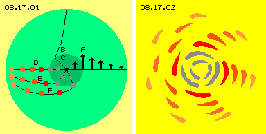
Bei A sind Pfeile in tangentialer Richtung eingezeichnet, welche die Geschwindigkeit von Partikeln anzeigen. Von außen nach innen bewegen sich die Partikel im Drehsinn (hier immer links-drehend) mit zunehmender Winkel- und auch zunehmender absoluter Geschwindigkeit. Bei B ist diese ansteigende Geschwindigkeit durch die Kurve verdeutlicht.
Mit zunehmender Geschwindigkeit und kürzerem Radius wird die Fliehkraft stärker. Es bildet sich eine Grenze, bei welcher der Potentialwirbel in einen starren Wirbel übergeht. Im inneren Bereich (dunkelgrün) rotiert alles mit konstanter Winkelgeschwindigkeit. Nach innen nimmt somit die Absolut-Geschwindigkeit der Partikel ab, wie bei C markiert ist.
Bei D sind von innen nach außen einige Partikel eingezeichnet. Im Wirbelkern rotieren die Partikel (grau) als starrer Wirbel (praktisch wie ein Rad). Nach außen hin bewegen sich die Partikel immer langsamer vorwärts (markiert durch unterschiedliches Rot). Die äußeren Partikel bleiben während der Drehung immer weiter zurück (siehe Position E und dann F).
In Bild 08.17.02 ist dieses Bewegungsmuster als ´Fischschwarm´ skizziert, wobei die äußeren Fische langsam schwimmen und innen durch schnellere Fische überholt werden. In der folgenden Animation ist diese Charakteristik eines Potentialwirbels im Bewegungsablauf verdeutlicht. Jeder natürliche Wasserwirbel rotiert in Form dieses Bewegungsmusters. Bei den ständigen ´Überholvorgängen´ gleiten die Partikel aneinander vorbei, was zu Reibung führt bzw. wodurch anstelle laminarer Grenzflächen sich im Wirbel wiederum engere Wirbelzöpfe ergeben.
In Gasen sind die Partikel nicht ständig in gegenseitiger Berührung, wohl aber kollidieren sie permanent miteinander. Die Wirbel eines Tornados oder auch von kleinen Windhosen sind selbst-beschleunigend, weil dort der statische Luftdruck der Umgebung in dynamischen Druck der rotierenden Bewegung überführt wird (ausführlich beschrieben bei der Fluid-Technologie der Teile 05., 06. und 07. dieser Äther-Physik).
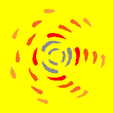
Auch in der Ekliptik finden ähnliche Bewegungsabläufe statt, wobei die äußeren Planeten durch die schnelleren Planeten auf jeweils engeren Bahnen überholt werden. Allerdings sind diese ´Partikel´ nicht miteinander in direktem Kontakt, sondern fliegen im ´leeren Raum´ im Kreis herum. Der notwendige Druck für den Zusammenhalt (oder gar der Beschleunigung) des Wirbels muss also eine andere Ursache haben. Da eine Anziehungskraft durch Nichts hindurch nicht ernsthaft unterstellt werden kann (aber dennoch gängige wissenschaftliche Anschauung ist), kann nur die Charakteristik eines ätherischen Wirbels verantwortlich sein.
Schwingende Äther-Scheibe
Der Äther selbst ist prinzipiell ortsfest und kann darum keine weiträumig rotierende Bewegung ausführen. Der Äther kann nur auf minimalen Radien schwingen. Er besteht nicht aus Teilchen, die aneinander vorbei gleiten könnten. Darum müssen sich benachbarte Ätherpunkte weitgehend parallel zueinander bewegen. Allerdings ist auch ein asymmetrisches Äther-Schwingen möglich und erst daraus ergeben sich die weiträumigen Strömungen materieller Partikel.
In Bild 08.17.03 ist bei A skizziert, wie sich benachbarte Ätherpunkte (markiert durch die rote Kurve) auf gleichen Kreisbahnen parallel zueinander im Raum bewegen. Die Radien dieses Schwingens können durchaus weiter werden, wie bei B skizziert ist. Dort ist ein Ätherpunkt C (schwarz) momentan in seiner unteren Position.
Wenn sich irgendwo Äther nach unten bewegt hat, muss sich zum Ausgleich irgendwo Äther nach oben bewegt haben. Weil Äther lückenlos und unelastisch ist, muss immer ein Ausgleich statt finden (hier angedeutet durch die gestrichelten Pfeile E). Auch rechts dreht der Äther gleichsinnig, jedoch um 180 Grad versetzt. Dann befindet sich der Ätherpunkt D momentan in seiner oberen Position und ebenfalls seine Nachbarn auf der blauen Kurve.
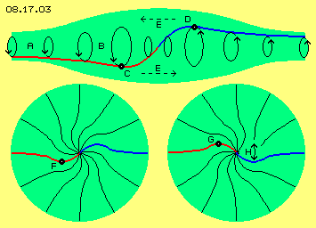
Sobald irgendwo im Äther eine Bewegung auf ausgeweiteten Bahnen statt findet, ergibt sich notwendigerweise dieses Bewegungsmuster einer ´Doppelkurbel´ (hier der roten und blauen Kurve). Diese entspricht z.B. der Achse eines Elektrons (siehe ´Potentialwirbelwolke´ in Teil ´02. Lokale Äther-Bewegungen´). Bei Atomen sind solche Bewegungsmuster kugelförmig radial zueinander angeordnet (siehe Kapitel ´08.13. Äther-Modell der Atome´). Bei paralleler Anordnung solcher Doppelkurbeln ergeben sich flächige Muster (wie in Kapitel ´08.14. Flächen, Röhren und Membranen´ dargestellt ist). Hier jedoch soll nun deren radial-flächige Anordnung in Form von Scheiben diskutiert werden (wie real existent als Milchstrasse, als Ekliptik und als ´Whirlpool´ des Erde-Systems).
Der grüne Bereich oben im Bild stellt einen Längsschnitt durch eine Wirbelscheibe dar. Um deren Mittelpunkt sind viele dieser Doppelkurbel-Wirbel radial angeordnet, so dass sich eine runde Wirbel-Fläche ergibt. Die grünen Bereiche unten im Bild stellen Querschnitte durch diese Wirbelscheibe dar bzw. eine Sicht auf diese.
Durch die rote und blaue Kurve ist eine der Doppelkurbeln hervor gehoben. Ein Ätherpunkt F (schwarz) befindet sich momentan unterhalb der 9-Uhr-Position. Alle Kurbeln drehen synchron um ihre Längsachsen, die jeweils in radiale Richtung weisen. Im Bild unten rechts ist die Situation nach einer Kurbel-Drehung um 180 Grad dargestellt. Der vorige Ätherpunkt befindet sich nun bei G, d.h. oberhalb der 9-Uhr-Poisiton. Alle Punkte schwingen in gleicher Weise. Die Scheibe insgesamt bewegt sich damit phasenweise etwas links- und dann wieder rechtsdrehend (siehe Doppelpfeil H).
Alle Abstände zwischen den Ätherpunkten bleiben konstant - so wie es im lückenlosen Äther notwendig ist. Obwohl dieser Äther eine absolut ´solide Substanz´ ist (vergleichbar einem ´Fest-Körper´), bewegt sich Äther lokal in solchen Schwingungs-Mustern. Gerade weil benachbarte Ätherpunkte sich adäquat verhalten müssen, ergeben sich automatisch solche Bereiche geordneter Bewegung.
Schwingen mit Schlag
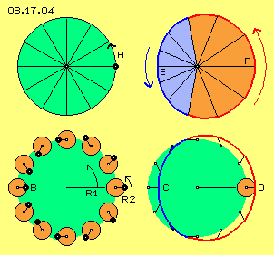
Real bewegt sich der Freie Äther auf ´knäuelförmigen´ Bahnen. Stark vereinfacht werden die Bahnen in diesen zwei-dimensionalen Bildern als Kreisbahnen dargestellt. Ein Ätherpunkt A (schwarz) bewegt sich je Zeiteinheit beispielsweise um 30 Grad um seinen Drehpunkt (oben links im Bild 08.17.04). Diese Bewegung mit Radius R1 (grüne Kreisflächen) wird meist überlagert durch eine Drehung mit Radius R2 (rote Kreisflächen). Unten links ist dieses dargestellt in zwölf Positionen eines beobachteten Ätherpunktes (schwarz).
Wenn beide Drehungen gleichsinnig und mit gleicher Drehzahl erfolgen, befindet sich voriger Ätherpunkt A bei 3-Uhr außerhalb, aber innerhalb der grünen Kreisfläche bei 9-Uhr in der Position B. Die bislang runde grüne Kreisbahn wird dabei zu einer ´Apfelbahn´ deformiert, wie unten rechts noch einmal durch den blauen Bahnabschnitt C und den roten Bahnabschnitt D skizziert ist.
Oben rechts im Bild sind die zwei unterschiedlichen Sektionen noch einmal dargestellt. Im blauen Sektor E legt der Ätherpunkt während sechs Zeiteinheiten relativ langsam nur einen kurzen Weg zurück. Ebenfalls während sechs Zeiteinheiten bewegt sich der Ätherpunkt im roten Sektor F sehr viel schneller und weiter im Drehsinn voran. Wie bereits in Kapitel ´08.08. Bahnen mit Schlag´ detailliert dargestellt wurde, ergeben solche Überlagerungen einen ungleichförmigen Bewegungsablauf. Es ergibt sich dabei zwangläufig eine ´schlagende´ Bewegungskomponente.
Vor- und rück-schwingend
Im Gegensatz zu obigem materiellen Potentialwirbel (der ersten beiden Bilder) findet hier keine weiträumige Rotation statt. Der Äther bleibt prinzipiell stationär und schwingt nur innerhalb eines kleinen ´Bewegungsrahmens´. In Bild 08.17.05 ist noch einmal eine Sicht auf eine Wirbelscheibe dargestellt, nun aber mit den Merkmalen eines Äther-Potential-Wirbels.
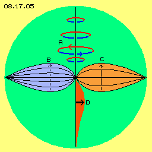
Quer zur radialen Richtung sind vorige Kreisbahnen angeordnet mit von außen nach innen zunehmenden Radien (bei A). Entscheidend ist der Radius R2 der überlagerten Bewegung, weil dieser den Umfang des Schlagens bestimmt. Der längere und schnellere Sektor ist wieder rot markiert, der kürzere und langsamere Bahnabschnitt ist blau markiert.
Bei B sind Verbindungslinien benachbarter Ätherpunkte vom Zentrum bis zum Rand der Wirbelscheibe eingezeichnet. Diese Kurven ergeben sich also aus deren parallelem Schwingen an den jeweiligen Radien: außen auf engen Bahnen, nach innen auf zunehmend weiteren Bahnen-mit-Schlag, zum Zentrum hin wieder auf sehr kleinen Radien. Links bei B ist die Bewegung im langsamen Segment (blau) schematisch skizziert, wo sich die Ätherpunkte viel Zeit nehmen für das Rück-Schwingen (im Uhrzeigersinn).
Rechts bei C ist umgekehrt die Bewegung im schnellen Sektor (rot) skizziert, wo die Ätherpunkte die gleichen Strecken in kürzerer Zeit zurücklegen bei ihrem links-drehenden Vorwärts-Schlagen. Unten bei D ist die Differenz dieses Schlagens als Kurve (über der dunkel-roten Fläche) markiert: am Rand der Wirbelscheibe praktisch null (neutraler Freier Äther), nach innen zunehmend (wie beim Potentialwirbel), schließlich zum Zentrum hin wieder abnehmend (wie beim starren Wirbel).
In der folgenden Animation wird dieses Schwingen durch Verbindungslinien in vier radiale Richtungen verdeutlicht: die benachbarten Ätherpunkte (rote Kurve) schwingen rasch vorwärts und ergeben eine links-drehende, schlagende Bewegung in der Wirbelscheibe. Die gleiche Verbindungslinie (nun blau markiert) schwingt langsam zurück als eine rechts-drehende Bewegung in der Wirbelscheibe.
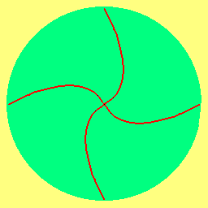
Illusion
Es ist klar, dass unsere sechs Sinne nur einen sehr beschränkten Ausschnitt der Realität erkennen können. Die größte Illusion allerdings ist, dass wir glauben in einer Welt materieller Teilchen zu leben. Wir fahren z.B. ein aus festen Teilen zusammen gebautes Auto oder beobachten die rasende Bewegung gigantischer Himmelskörper. Tatsächlich bewegt sich aber nichts vorwärts in der einzig existenten Substanz des Äthers, der immer nur an seinem Ort etwas schwingend ist.
Die vorigen Zeichnungen sind extrem überzeichnet: die Wirbelscheibe der Erde hat einen Radius von etwa einer Million Kilometer. Der oben skizziert Radius R1 einer Kreisbewegung wird ´milliardstel Nanometer´ klein sein (nur um eine Zahl zu nennen). Die exzentrische Überlagerung mit obigem Radius R2 wird millionenfach kleiner sein. Das jeweilige Schlagen wird also minimal sein. Allerdings schwingt aller Äther mindestens mit Lichtgeschwindigkeit, so dass dieses nahezu unmerkliche Schlagen mit hoher Frequenz erfolgt. Es gibt real keine weitreichende Äther-´Strömungen´, ein Äther-´Whirlpool´ besteht real nur aus winziger, ungleichförmiger Bewegung ortsfesten Äthers. Dennoch bewirkt dieses minimale Schlagen durchaus ´materielle´ Effekte in makroskopischem Umfang.
Schub auf Atome
Atome bestehen aus ganz normalem Äther, der lediglich in besonderem Muster schwingend ist. Im Äther können sich viele Bewegungen überlagern, z.B. Strahlung unterschiedlicher Art und Richtung. Diese kann aber Atome kaum durchdringen und die Bewegungen der Atome können sich überhaupt nicht überlagern. Andererseits reagieren die Atome sehr wohl auf Bewegungsmuster im umgebenden Äther.
In Bild 08.17.07 ist bei A schematisch ein Atom skizziert. Es besteht aus radial angeordneten Wirbeln, wobei hier nur eine dieser ´Doppelkurbeln´ eingezeichnet ist. Im Kern treffen alle Wirbel zusammen und alle Bewegungen müssen dort auf engem Raum synchron zueinander verlaufen. Die ´Beuge-Fähigkeit´ des Äthers ist dort maximal beansprucht - und nur darum erscheinen Atome und besonders deren Kern als ´harte Teilchen´. Real aber gibt es überhaupt keine Teilchen, alles ist nur aus dem einen Äther. Diese speziellen Bewegungsmuster werden durch den allgemeinen Ätherdruck (siehe Pfeile B) der Umgebung zu Wirbel-Kugeln zusammen gedrückt (Details siehe Kapitel ´Äther-Modell der Atome´).
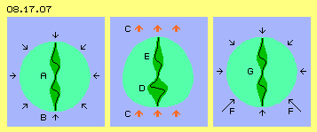
In den vorigen Kapiteln wurde ausführlich beschrieben, wie die Bewegungsmuster im Raum vorwärts geschoben werden. Darum sei hier der prinzipielle Prozess nur kurz nochmals dargestellt. Bei C ist das oben diskutierte Schlagen durch rote Pfeile markiert. Der untere Wirbel D des Atoms wird auf kürzere Länge zusammen gedrückt und muss darum zur Seite weiter werden. Dieses Schlagen erfolgt überall praktisch zeitgleich, sodass der obere Wirbel E gestreckt wird. Der ganze Wirbelkomplex des Atoms wird zu einer Ei-Form deformiert, unten flach und breit gedrückt und oben schlanker und spitzer gezogen (siehe hell-grüne Fläche).
Sobald das Schlagen des umgebenden Äthers schwächer wird und endet, schiebt der allgemeine Ätherdruck die unteren Beulen (siehe Pfeile F) zurück und das Atom nimmt wieder seine ursprüngliche Kugelform an. Allerdings befindet sich nun dieser Wirbelkomplex G um eine geringe Distanz versetzt im Raum, d.h. das Atom ist etwas ´vorwärts-gezittert´ in Richtung des Schlagens, hier also etwas nach oben gerückt.
Noch einmal sei der Unterschied zwischen scheinbarer Bewegung materieller Teilchen und den realen Ätherbewegungen klar ausgedrückt: nur das Bewegungsmuster von Atomen wurde etwas nach vorn gerückt. Aller Äther aber bleibt generell am Ort seines ´Bewegungsrahmens´. Der Äther im großen Whirlpool schwingt ganz normal im Raum, lediglich überlagert durch obige schlagende Bewegungskomponente. Von Zeit zu Zeit wird durch einen lokalen Bereich das Bewegungsmuster eines Atoms hindurch geschoben. Der dortige Äther nimmt also nur zeitweilig und vorübergehend das Bewegungsmuster eines Atoms an.
Mehr geschieht nicht im Äther - auch wenn es für uns so aussieht, als würden gigantisch große Planeten durch den Raum rasen. Planeten bestehen nur aus Atomen. Atome sind keine Teilchen, sie sind nur unterschiedlich komplexe Wirbel und sind darum unterschiedlich ´sperrig´ gegenüber Veränderungen (was man ´Masse´ nennt). Letztlich ist alles nur Bewegung von Äther im Äther, allerdings lokal ein unterschiedliches Schwingen und in der Zeit veränderlich.
Asteroid auf Gegenkurs
Wann immer ein Objekt in das ´Gravitationsfeld´ der Sonne oder der Erde eintritt, werden die Bahndaten erfasst und gemäß Newton und Kepler der weitere Verlauf prognostiziert. Aber meistens verhält sich ein Komet oder Asteroid doch etwas anders. Verantwortlich dafür sind aber nicht irgendwelche Störfaktoren, vielmehr entspricht die gängige Modell-Vorstellung nicht der Realität - weil es diese weitreichende Gravitation nicht gibt, sondern nur dieses Schlagen der Bewegungen in den ´Whirlpools´.
In Bild 08.17.08 repräsentieren die blauen Flächen den Raum bzw. Freien Äther und die grünen Flächen sind links-drehende Scheiben eines Äther-Whirlpools. Wenn Objekte (schwarze Punkte) von außen in diesen Bereich kommen, werden ihre Bahnen (schwarze Kurven) durch das Schlagen des Äthers beeinflusst. Jeweils rot ist markiert, in welchem Abschnitt und von welcher Seite der Schub auf die Atome wirkt.
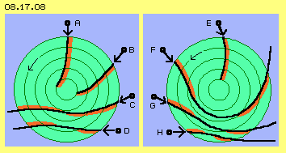
Bei A fliegt ein Objekt radial auf das Zentrum des Wirbels zu, aber sein Flug wird nach rechts abgelenkt (immer aus Sicht in Flugrichtung). Diese Bahn ist also anders als sie sich aufgrund üblicher Gravitation ergeben würde. Bei B fliegt das Objekt in einem flacheren Winkel herein, gegen den Drehsinn des Wirbels. Die Bahn wird durch den seitlichen Schub (rot markierter Bereich) nach rechts ins Zentrum gelenkt (wie es auch der vermeintlichen Gravitation entsprechen würde). Durch den ´Gegenwind´ von links-vorn wird das Objekt aber langsamer (also entgegen einer vermeintlichen Gravitations-Beschleunigung).
Die Erde ist links-drehend um die Sonne und auch ihr Ätherumfeld weist links-drehendes Schlagen auf. Die vorigen Bahnen werden Objekte aufweisen, die von vorn (rechts-drehend zur Sonne) auf die Erde zukommen. Vom Rand des Erd-Whirlpools bis zur Magnetopause (wo frühestens das lokale Gravitationsfeld der Erde beginnt) wird z.B. ein Asteroid auf Bahnen wie bei A oder B heran fliegen.
Komet im Vorbei-Flug
Wenn ein Komet ebenfalls aus dieser Richtung heran fliegt und die Erde auf der Nachtseite (der Sonne abgewandten Seite) passiert, wird seine Bahn einen Verlauf wie bei C oder D aufweisen. Zunächst wird er durch den ´Gegenwind´ von seitlich-vorn-links etwas zur Erde hin gedrückt. Später kommt dieser Schub von der anderen Seite (siehe rot markierte Sektoren) und die Bahn wird nach außen gedrückt. Auf dieser S-förmigen Bahn wird der Komet etwas verzögert.
In diesem Bild rechts fliegen die vorigen Objekte in gleichem Winkel in den Einflussbereich der Erde herein, nun aber aus der anderen Richtung: von hinten mit hoher Geschwindigkeit (schneller als die Erde um die Sonne kreist). Die vorigen Kometen kommen nun also von den Positionen G und H und dringen in den Whirlpool ein (gleichsinnig zu dessen Drehsinn). Beide werden wieder auf S-förmigen Bahnen fliegen und die Erde z.B. im Abstand von einer halben bis einer Million Kilometer passieren (so weit reicht der Erd-Whirlpool).
Bei E ist skizziert, dass ein Asteroid z.B. auch in geringem Winkel gegen den Drehsinn der Erde heran fliegen kann, um letztlich in radialer Richtung auf die Erde nieder zu fallen (während links der vergleichbare Asteroid A von außen zunächst radial anfliegt und letztlich schräg herunter fällt).
Kein Parabel-Flug
Bei F ist nun die Situation dargestellt, wo ein ´Weltraum-Vagabund´ sich der Sonne nähert, so dass dessen Bahn im Whirlpool der Ekliptik umgelenkt wird. Analog dazu werden die Erde und Nachbar-Planeten benutzt, um Satelliten per ´Gravitations-Schleuder´ auf die Reise zu äußeren Planeten zu schicken. In beiden Fällen ergeben sich nach den Gesetzen der Astro-Physik sehr schöne parabolische Bahnverläufe.
Die Start-Position bei F entspricht voriger bei B, nur fliegt nun das Objekt in den Whirlpool in dessen Drehsinn hinein. Die Bahn F wird zunächst nach rechts abgedrängt (aufgrund des links anstehenden Schubes, rot markiert). Das Objekt wird in eine Kreisbahn im Drehsinn des Schlagens geschoben. Wenn die Geschwindigkeit des Objektes dort zu hoch ist, wandert es aufgrund von Trägheit nach außen. Auf dieser sich öffnenden Spiralbahn (oder gar tangential geraden Bahn) kommt die schlagende Bewegung nun von rechts, d.h. der Schub wirkt von hinten-seitlich (siehe zweite rote Sektion). Damit wird die Flugbahn nach links umgelenkt, bis das Objekt letztlich den Whirlpool verlässt.
Es ergibt sich im Prinzip wiederum eine S-förmige Bahn, welche aber weiter um das Wirbelzentrum herum gelenkt wird. Es ergeben sich real niemals die formelhaft berechneten Parabel-Bahnen. Bei jedem Kometen muss die Bahn immer wieder neu bestimmt werden. Bei oben genannter Gravitations-Schleuder wurde zweifelsfrei erkannt, dass die Abflug-Geschwindigkeit aus unerklärlichen Gründen schneller (und in mancher Konstellation langsamer) ist als berechnet wurde. Vermutlich wird auch die Richtung nicht stimmig sein (weil anschließend Kurskorrekturen vorzunehmen sind). Wenn Satelliten das Sonnensystem verlassen, fliegen sie erstaunlicherweise schneller oder langsamer als erwartet - was unerklärlich ist im ´leeren Raum´.
Natürlich stelle ich damit ´ungeheuerliche´ Behauptungen auf, ohne sie belegen zu können. Ich kann nur empfehlen, den Flug der Objekte nicht als starre Himmelsmechanik zu sehen, sondern aus Sicht eines Äther-Whirlpools zu verfolgen. Gelegenheit und Daten und Rechenkapazität sind für Fachleute ausreichend vorhanden. Wenn die Flugbahnen nach diesen neuen Kriterien geplant würden, gäbe es z.B. bei Mars-Sonden eine höhere Trefferrate.
Im Karussell der Ekliptik
Nicht alle Objekte durchqueren einen Äther-Whirlpool, sondern bleiben in diesem ´gefangen´. Diese Situation ist in Bild 08.17.09 schematisch skizziert: hier fliegt ein Objekt A (schwarz) in flachem Winkel in eine links-schlagende Äther-Scheibe hinein. Wie oben ausgeführt wurde, wird die Flugbahn zunächst nach rechts umgelenkt (siehe roten Bereich des seitlichen Schubs).
Danach fliegt das Objekt eine gewisse Zeit in tangentialer Richtung, bis der seitliche Schub von außen die Bahn wieder in den Drehsinn des Systems drückt. Diese Abfolge von relativ geraden, nach auswärts gerichteten Bahnabschnitten und mehr nach einwärts gekrümmten Abschnitten kann sich wiederholen (hier z.B. vier mal skizziert).
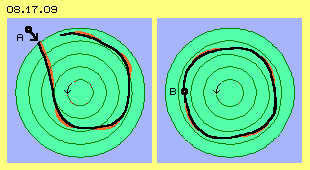
Jedes Objekt will sich aufgrund Trägheit geradlinig im Raum vorwärts bewegen. Wenn die Bahn des Objekts gekrümmt wird, ergibt sich Fliehkraft bzw. es ist zentripetale Gegenkraft erforderlich für die Bahn-Krümmung. Hier war das Objekt relativ nah beim Wirbelzentrum, kam dann aber auf immer weitere Kreisabschnitte. Die Bahnen dort außen sind weniger stark gekrümmt und die Fliehkraft ist entsprechend geringer. Das Objekt wird letztlich auf eine runde Bahn einschwenken, bei welcher der seitliche Schub des Schlagens ausreichend ist zur Kompensierung der Fliehkraft.
Rechts in diesem Bild ist ein Objekt B eingezeichnet. Seine Bahn bewegt sich rund um das Wirbelzentrum, allerdings nicht auf einer exakt kreisförmigen Bahn. Immer wieder fliegt das Objekt aufgrund seiner Trägheit leicht auswärts. Je größer der Winkel zur tangentialen Richtung des Schlagens wird, desto heftiger drückt der seitliche Schub die Bahn wieder einwärts.
Die Geschwindigkeit des Objektes kann variieren aufgrund diverser Einflüsse. Die Krümmung der Bahn ist veränderlich und somit auch die auftretenden Fliehkräfte. Das Schlagen im Drehsinn des Systems wird nicht vollkommen stetig sein. Prinzipiell nimmt dessen Kraft zum Rand des Wirbelsystems ab. Erst wenn sich aus diesen Faktoren insgesamt ein Gleichgewicht ergibt, nähert sich die Bahn einer Kreisform mit adäquatem Radius.
Damit wird verständlich, warum Planeten niemals auf exakten Kreisen um die Sonne fliegen. Die Bahnen sind auch keine exakten Ellipsen, sie sind nicht einmal symmetrische Ovale - weil zu viele Einflussfaktoren vorhanden sind. Die Planeten fliegen auf exzentrischen Bahnen, die allerdings nicht immer in sich geschlossen sein müssen. Es können sich ´Rosetten-Muster´ bilden oder aus- und eindrehende Spiralbahnen. Beispielsweise ändert sich der Abstand zwischen Mond und Erde regelmäßig binnen eines Monats, zusätzlich aber fliegt er acht Jahre lang auf immer weiterer Bahn, um anschließend wieder näher zur Erde zu kommen.
Die mathematisch formulierten ´Gesetze der Himmelsmechanik´ können diesem Sachverhalt nicht gerecht werden. Die Formeln entsprechen noch nicht einmal dem wirksamen Prinzip: in den vorigen Bildern wurde bewusst keine zentrale Masse (der Sonne oder Erde) eingezeichnet, die Bahnen dieser Objekte erfordern keinerlei Anziehungskräfte, sondern basieren ausschließlich auf dem Schlagen im Drehsinn eines Äther-Whirlpools.
Welten im Zusammenstoss
´Worlds in Collision´ ist der Titel eines Buches von Dr. Immanuel Velikovsky und noch einige andere Autoren (Sitchin, Lutze u.a.) beschreiben ´unglaubliche Szenarien´. In Bild 08.17.10 ist schematisch die Situation bei Annäherung von zwei Himmelskörpern skizziert, aus welcher die dramatischen Ereignisse abzuleiten sind. Bei A ist zunächst eine normale Strasse (blau) gezeichnet, auf welcher zwei Fahrzeuge (grüner und roter Punkt) aneinander vorbei fahren. Außer ein paar Luftverwirbelungen geschieht gar nichts. Wenn sich Himmelskörper begegnen, müsste der Mittelstreifen (B, weiß) zwischen diesen Fahrzeugen vergleichsweise mehr als einen halben Kilometer breit sein - sonst kommt es zur Katastrophe.
Diese Situation ergab sich, als die Erde von der schnelleren Venus in zu geringem Abstand überholt wurde. Der grüne Punkt E repräsentiert die Erde, welche sich hier aufwärts bewegt. Nur ein Sektor ihres Äther-Whirlpools ist grün markiert mit seinem links-drehenden Schlagen (siehe Pfeile). Der rote Punkt V links repräsentiert die Venus und der rote Sektor markiert den Bereich ihres umgebenden Whirlpools. Im Überschneidungsbereich C (hier nur als grobes grün-rotes Muster skizziert) war der Äther in extremem Aufruhr.
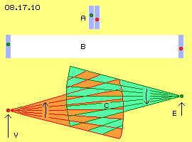
Aller Äther bewegt sich etwa mit Lichtgeschwindigkeit. Wenn sich gegenläufige Bewegungen in spitzem Winkel schneiden, rasen die Schnittpunkte mit vielfacher Lichtgeschwindigkeit durch den Raum, hier nach rechts zur Erde und gleichermaßen nach links zur Venus (wie die steilen Wellen einer ´Kreuzsee´). Im gesamten Raum zwischen den Objekten toben ´elektromagnetische Stürme´. Die interne Beweglichkeit bzw. Biege-Toleranz des lückenlosen Äthers ist maximal belastet. Die übermäßige Spannung kann nur durch rasend schnell davon fliegende Schwingungen abgebaut werden.
In Mythen und Sagen, heiligen Büchern und alten Schriften aus aller Welt wird über himmlische Kämpfe berichtet, wo ´Götter´ in Form von Kometen, Planeten und Sternen beteiligt sind. So soll beispielsweise ein Komet (Ishtar, Phaethon, Quetzal-cohuatl) mehrmals der Erde begegnet sein, um dann als Morgen- und Abendstern ´geboren´ zu werden. Dieser Komet ist also in eine enge Bahn eingeschwenkt, wo er noch immer als Planet Venus um die Sonne kreist. Diese Begegnungen hatten katastrophale Auswirkungen für die Erde - und für die Menschen - vor wenigen tausend Jahren.
Katastrophen-Berichte
´Gewitter ungeahnter Heftigkeit gingen nieder, Wasser stürmte die Berge hinauf, die Nacht dauerte tagelang und auf der anderen Seite ging die Sonne nicht unter, die Erde brach auf und Vulkane stießen Feuer und Asche aus, ganze Erdteile hoben oder senkten sich, es regnete wochenlang in Strömen, alles war verwüstet und viele Menschen kamen zu Tode, besonders in den Siedlungen an Flüssen und Küsten, die verbliebenen Menschen konnten nur überleben, weil Manna vom Himmel fiel, alle Kultur und Zivilisation war weitgehend vernichtet, die Menschheit musste praktisch wieder von Null an beginnen.´
So und noch verwirrender lauten die Geschichten und man könnte sie als Ergebnis überschäumender Phantasie abtun, wenn sie nicht überall auf der Welt in vielen Details übereinstimmen würden. Einige überlebten diese Katastrophe und ihre Kinder und Enkel wuchsen in einer für sie ganz ´normalen´ Welt auf. Was wohl hätten die Altvorderen ihren Nachkommen erzählt: phantastische Lügengeschichten oder wahrheitsgemäße Berichte ihrer extremen Erfahrungen? Mangels eigener Erfahrung hätten nachfolgende Generationen die Berichte verfälscht, entsprechend zur gerade herrschenden Kultur. Zweihundert Generationen später hat eine neue Zivilisation - die heutige - so viel wissenschaftlich gefestigtes Wissen erreicht, dass die meisten Menschen solchen Märchen kaum mehr Beachtung schenken.
Physikalische Realität
Eine dieser Fixierungen ist, dass die Geologie lange evolutionäre Abläufe unterstellt und kurzfristige, ´katastrophale´ Ereignisse generell ausschließt. Geologische Beweise werden einfach nicht zur Kenntnis genommen. Beispielsweise können die Ablagerungen im Norden der Alpen niemals aus normaler Erosion hervor gegangen sein. Das Mittelmeer muss über das Gebirge hinweg geschwappt sein und in kürzester Zeit mächtige Geröllschichten aufgetürmt haben. Findlinge liegen praktisch überall herum - an Orten, wohin sie niemals ein Gletscher hätte transportieren können.
In der Sahara gab es ausgedehnte Süßwasser-Seen, die schlagartig in die Ozeane abgeflossen sein mussten. Überall gibt es Sediment-Gestein in mächtigen Schichten, die niemals so gleichförmig entstehen konnten während Millionen von Jahren. Wohl aber ist ein ´Brei´ aus Wasser und Sanden unglaublich fließfähig und kann andererseits durch Hitze binnen kurzer Zeit zu einer beton-ähnlichen Konsistenz erstarren. Die ´steinernen Zeugen´ sind unübersehbar - nur die Mainstream-Wissenschaften sehen darüber hinweg, weil sonst zu viel an gängigen Vorstellungen zu revidieren wäre.
Eine andere fixe Vorstellung ist die der Gravitation und der Schwere: dass Masse gegenseitig anziehend wirkt und alle Atome ´schwer´ sind. Atome haben kein Gewicht, sie bestehen aus Äther genau so wie alle Umgebung auch. Diese speziellen Bewegungsmuster ´schweben´ im Äther, bzw. zittern und rasen mit unglaublicher Geschwindigkeit herum. Jeder Luftpartikel fliegt von einer Kollision zur andern mit 550 m/s gleich 2000 km/h - und wir merken nichts davon. Zur Erd-Oberfläche hin gedrückt wird alles nur aufgrund gradueller Differenzen der lokalen Ätherbewegungen (siehe voriges Kapitel) - und wir bemerken es kaum. Zugleich wandern wir mit der Ekliptik und rotieren mit dem Whirlpool der Erde durch den Raum - und spüren es nicht.
Bei der Begegnung mit der Venus gab es extreme Ätherbewegungen. Die Erde schlug eine ´Volte´ und wurde um zwei Millionen Kilometer (etwa dem Durchmesser des Erde-Whirlpools) in der Ekliptik nach außen versetzt. Anstelle von 360 Tagen dauert nun ein Umlauf etwa fünf Tage länger. Wie konnten Menschen diese Prozedur überstehen, warum wurden sie nicht hoch in die Luft geschleudert oder mit großer Gewalt zu Boden gedrückt?
Äther-Wirbel in wirbelndem Äther
Sie spürten von diesen extrem heftigen Bewegungen so wenig wie wir von unserer stetigen Reise durch den Raum. Die Astronomen konnten in aller Ruhe ihre Instrumente beobachten und im Orient auf Tag und Stunde genau feststellen, dass die Sonne im Westen nicht unterging, sondern am Himmel wieder aufstieg. Im fernen Asien wurde beobachtet und dokumentiert, wie Fixsterne am Firmament wankten.
Alle Atome sind nur Wirbelkomplexe von Äther im Äther. Wenn der umgebende Äther nicht nur neutral schwingend ist, sondern in eine bevorzugte Richtung eine schlagende Bewegungskomponente aufweist, werden die Atom-Bewegungsmuster im Raum etwas vorwärts geschubst (wie oben dargestellt). Bei dieser Katastrophe war aller Äther in heftiger Bewegung - und in Richtung des vorherrschenden, kräftigen Schlagens wurden die Bewegungsmuster aller Atome im Raum vorwärts geschoben, alle Atome eines Menschen wie alle Atome (zumindest) seiner näheren Umgebung. Aller Äther verhielt sich gleichermaßen, es gab keine Relativ-Bewegung zwischen Menschen und dem Boden unter ihnen.
Geburt neuer Wirbelsysteme
Aller Äther war damals in sehr viel heftigeren Bewegungen als in den derzeitigen, normalen Verhältnissen. Während dieser Begegnung von Erde und Venus und noch lange danach stürmten ungeordnete Bewegungs-Fragmente zur Erde. Schon die äußeren Schichten der Atmosphäre waren ionisiert - weil ein Elektron die kleinste, lokal geordnete Wirbelstruktur bildet. Wenn solche ´Doppelkurbeln´ asymmetrisch sind, erfordern sie einen etwas weiteren Ausgleichsbereich, was dann ein H-Atom ergibt. Wenn mehrere solcher Wirbel sich radial zusammen finden, ergeben sich Atome z.B. von C oder O (siehe Kapitel ´Äther-Modell der Atome´).
Alle Atome haben eine spezielle Aura, welche weit in ihr Umfeld hinaus wirkt. Wenn vorige Bewegungs-Fragmente in Bereiche eindringen, wo solche Muster bereits vorhanden sind, werden sie sich entsprechend zusammen fügen (siehe Thema ´Information, Resonanz, Emergenz´ in vorigem Kapitel). Als in diesen Zeiten ungewöhnlich viele und vielerlei Bewegungen durch den Äther schwirrten, konnten sich viele Fragmente zu Bewegungsmustern formen, analog zu bereits vorhandenen. Es gab eine inflationäre Generierung z.B. obiger Elemente H, C und O. Diese Atome entstanden neu, aber nicht aus dem Nichts heraus, sondern aus der riesigen Menge von Äther-Bewegungs-Fragmenten, indem diese sich nach bereits vorhandenen Mustern ordneten.
H und O konnten zu H2O verbrennen - und es regnete ´neues´ Wasser wochenlang wie aus Kübeln. Das mag unglaublich klingen, aber auch heute fällt unter bestimmten Bedingungen länger und mehr Wasser vom Himmel, als in den gegebenen Wolken als Wasserdampf oder Eiskristalle gespeichert sein konnte. Noch unglaublicher ist nur die Behauptung, dass ´Manna´ vom Himmel fiel - aber aus neuem H und neuem C konnten unter diesen Umständen auch Kohlenwasserstoffe hervor gehen - nahrhafte organische Substanzen.
Wie gesagt: aufgeklärte Menschen müssen solchen Ammen-Märchen keinen Glauben schenken. Ich möchte nur aufzeigen, vor welchem Hintergrund welche Prozesse statt finden konnten - weil ohne einen lückenlosen Äther als Basis aller Erscheinungen, könnten diese Geschichten niemals Wirklichkeit gewesen sein.
Andererseits ist erstaunlich, dass gerade dieser Tage sich tausende Wissenschaftler freuen, weil bei CERN ´Millionen neuer Teilchen´ produziert wurden. Sie hoffen nun endlich das ´Higgs-Teilchen´ zu finden, weil ohne diesen ´Klebstoff´ das ganze Gebäude der Quanten-Theorien nicht bestehen kann. Sie wollen auch den ´Urknall´ besser verstehen lernen. Aber diese destruktiven Experimente stellen die Umkehrung des obigen Prozesses dar: intakte Wirbelkomplexe werden zerschlagen und Schrott in Form labiler Bewegungsfetzen produziert - ohne Chance auf neue Erkenntnis.
Bahn des Erde-Mond-Systems
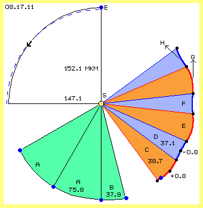
Nach dieser Exkursion in die Vergangenheit des Erde-Whirlpools sind nun aktuelle Daten zu diskutieren. In Bild 08.17.11 ist im Zentrum die Sonne (S, gelb) markiert, um welche die Erde (E, blau) dreht. Der Abstand zur Sonne variiert zwischen etwa 152.1 und 147.1 Millionen Kilometer (Mkm). Die Erde taumelt linksdrehend somit auf einer ziemlich ungleichförmigen Bahn um das Zentrum.
Auch ihre Geschwindigkeit variiert (zwischen 29.29 und 30.29 km/s). Im Durchschnitt bewegt sich die Erde jeden Monat (je 29.5 Tage) um etwa 75.8 Mkm im Drehsinn vorwärts (siehe grün markierte Sektoren A) bzw. etwa 37.9 Mkm zwischen Neumond und Vollmond (siehe grünen Sektoren B).
Bei zunehmendem Halbmond befindet sich der Mond (schwarzer Punkt) im Drehsinn hinter der Erde (blauer Punkt), nach etwa zwei Wochen befindet sich der abnehmende Halbmond im Drehsinn vorn. Der Mond ´überholt außenherum´ die Erde während dieser Phase und legt dabei eine um etwa 0.8 Mkm längere Strecke zurück. Der Mond ´fällt auf der Innenseite´ zurück während der zweiten Monatshälfte und legt dort etwa 0.8 Mkm geringere Distanz zurück.
Somit legt der Mond während des ´Vollmond-Halbmonats´ im Raum die lange Distanz von etwa 38.7 Mkm zurück (siehe breiten roten Sektor C). Der ´Neumond-Halbmonat´ dauert zeitlich gleich lang, der Mond bewegt sich dabei im Raum aber nur um etwa 37.1 Mkm vorwärts (siehe schmalen blauen Sektor D).
Der Mond dreht also nicht konstant nur um die Erde herum, sondern ´schlingert´ im Raum vorwärts um die Sonne. Einerseits bewegt er sich dabei beschleunigt auf einer weiten Bahn (Sektor E) und andererseits verzögert und näher zur Sonne (Sektor F). Diese Phasen wechseln sich ab, wobei sich wiederum die Erde auf ungleichförmiger Bahn mal schneller und langsamer vorwärts bewegt.
Es ist wahrhaft unglaublich, dass diese ´Himmelsmechanik´ aufgrund gängiger Vorstellungen per ´imaginärer Anziehungskräfte´ funktionieren könnte. Entweder müsste der Mond nach außen davon fliegen (siehe Pfeil G, bei seiner höchsten Geschwindigkeit und weitestem Abstand) oder zur Sonne fallen (siehe Pfeil H, bei seiner geringsten Fliehkraft und geringstem Abstand). Jeder Mechaniker kennt das Resultat rotierender Systeme mit minimalen exzentrischen Werten - die hier im Prozentbereich liegen.
Aber auch alternative Vorstellungen der Gravitation als Andrucks-Kräfte oder gar durch das All rasender ´Gravitations-Wellen´ können diesen Bewegungsablauf nicht erklären. Die vielfältig variablen bzw. ´fließenden´ Bewegungen sind nur zu verstehen als Wirbelsysteme: einerseits der ganzen Galaxis, in welcher die Ekliptik als ein Randwirbel rotiert und in dieser wiederum drehen die ´Whirlpools´ der Planeten. Wie eine Flüssigkeit mit ineinander eingebetteten Wirbeln bewegt sich aller Äther. Aber so wie weiträumig-dahin-stürmende Meereswellen realiter nur ein lokales Schwingen von Wasser sind, so gibt es real auch im All keine weiträumige Bewegung, sondern nur das lokal gleichsinnige Schlagen minimal kleiner Ätherbewegungen.
Äther-Wirbel-Wind der Erde
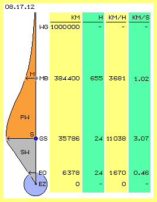
Wenn die Erde weiträumig umgeben wäre von Staub, könnte man die Ätherbewegungen als Wirbelwind erkennen (und nur in diesem Sinne werden nachfolgend die Begriffe ´Wind bzw. Strömung´ verwendet). Real gibt es nur einige ´Staubkörner´, aus deren Bewegungen die Charakteristik des Erde-Whirlpools abzuleiten sind. Einige Daten dazu sind in Bild 08.17.12 schematisch skizziert bzw. aufgelistet.
Die Erde (blau) ist ein massives ´Staubkorn´ mit einem Radius von 6378 km (vom Erd-Zentrum EZ bis zur Erd-Oberfläche EO am Äquator). Die Erde führt eine Umdrehung binnen etwa 24 Stunden aus, ein Ort am Äquator bewegt sich mit rund 1670 km/h im Kreis herum, also fast einen halben Kilometer je Sekunde.
Ein anderes massives Staubkorn stellt der graue Mond M dar, der durchschnittlich in etwa 384 400 km Höhe die Erde umrundet. Der Mond fliegt vorwärts mit durchschnittlich 3681 km/h bzw. rund einem Kilometer je Sekunde. Eine volle Umdrehung dauert 27.3 Tage, also rund 655 Stunden (und weil das System zwischenzeitlich im Raum weiter gewandert ist, muss der Mond sich etwas weiter drehen, um die gleiche Stellung zur Sonne nach einem Monat von rund 29.5 Tagen zu erreichen). Der Mond hat also eine wesentlich geringere ´Drehzahl´ als die schnell rotierende Erde im Zentrum des Wirbels.
Künstliche ´Staubkörner´ mit genau irdischer Drehzahl stellen die Satelliten S auf geostationärer Bahn (GS) dar. In einer Höhe von rund 35 800 km über dem Äquator drehen sie synchron zur Erde. Sie müssen dort mit einer Geschwindigkeit von über 11 000 km/h bzw. 3.07 km/s installiert werden. Dann driften sie antriebslos im dortigen ´Äther-Wind´, genau so wie weiter draußen der Mond.
Links im Bild sind die unterschiedlichen Geschwindigkeiten graphisch dargestellt (aber nicht maßstabgetreu): vom Erd-Zentrum bis zur Höhe der geostationären Satelliten steigt die Geschwindigkeit linear an, bildet die Ätherbewegung also einen starren Wirbel (SW, grau markiert). Außerhalb davon wird das Schlagen des Äthers schwächer, entspricht der ´Äther-Wind´ einem Potential-Wirbel (PW, rot markiert).
Etwas außerhalb der geostationären Höhe könnte die ´Wind-Stärke´ durchaus noch etwas zulegen (z.B. bis zur Magnetopause in etwa 60000 km Höhe), um dann nach außen abzufallen. Von den rund 3 km/s bei 35 800 km Höhe bleibt nur rund 1 km/s auf 384 400 km Höhe des Mondes. Bei linearer Reduzierung wäre die Wirbel-Grenze WG bald erreicht. Das Schlagen des Äthers verläuft aber hyperbolisch, sodass der Radius des gesamten Erde-Wirbelkomplexes rund eine Million Kilometer sein wird. Diese gewaltige Scheibe geordneter Ätherbewegungen stellt die ´Masse bzw. kinetische Energie´ des Erde-Whirlpools dar - also unendlich mehr als die paar darin driftenden ´Staubkörner´ aufweisen.
Wirbel im Wirbel
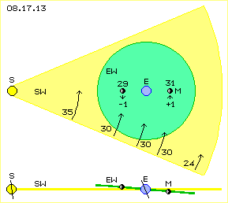
In Bild 08.17.13 ist ein Sektor der Ekliptik skizziert, welcher den ´rotierenden Sonnen-Wirbel-Wind´ (SW, gelb) repräsentiert. Dieser ist ein Potentialwirbel mit von innen nach außen abnehmender Geschwindigkeit, z.B. bei der Venus etwa 35 km/s, beim Mars etwa 24 km/s und dazwischen im Bereich der Erde (E, blau) mit diesen rund 30 km/s (siehe Pfeile).
Eingebettet in diesem Sonnen-Wirbel ist der ebenfalls links-drehende ´Erde-Wirbel-Wind´ (EW, hellgrün). Auch dieser ist ein Potentialwirbel, dessen Geschwindigkeit im Bereich des Mondes (M, grau/schwarz) aber nur etwa 1 km/s beträgt. Der Mond bewegt sich somit auf der Sonnen-Seite mit nur etwa 29 km/s im Raum vorwärts, auf seinem äußeren Bahnabschnitt aber bis zu 31 km/s schnell.
Dort außen addieren sich beide ´Strömungen´, während sich diese ´Winde´ auf der Sonnen-Seite begegnen. Die schlagenden Bewegungen überlagern sich im Äther, weil sie aber nicht überall völlig phasengleich vonstatten gehen, geht der schwächere Wind auf eine ´ausweichende´ Bahn. Darum ist die Ebene der Mondbahn etwa um fünf Grad geneigt gegenüber der Ebene der Ekliptik. Unten in diesem Bild ist das schematisch im Querschnitt skizziert: die Ebene des Sonnen-Wirbels (SW, gelb) ist horizontal gezeichnet, die Ebene des Erde-Wirbels (EW, grün) etwas schräg dazu.
Weil die Erdachse geneigt ist, steht die Sonne je nach Jahreszeit mehr oder weniger hoch am Himmel. Aufgrund der zusätzlichen Neigung der Mond-Bahn steht der Mond nochmals höher oder tiefer am Himmel, jeweils in monatlichen Phasen.
Ungleichförmige Mond-Bahn
Wenn die Erde im Raum ortsfest wäre, könnte der Mond in diesem Wirbel auf einer runden Bahn um die Erde driften. Seine Bewegung ist aber dem ´Sonnen-Wirbel-Wind´ ausgesetzt und seine Bahn wird deformiert. In Bild 08.17.14 oben links ist das in vier Phasen dargestellt. Die blaue Kurve stellt jeweils eine Kreisbahn um die Erde dar, die schwarzen Pfeile zeigen die davon abweichenden Bahnabschnitte.
Bei Neu-Mond NM weist der Vektor des Erd-Wirbels EW entgegen zur (hier aufwärts gerichteten) ´Strömung´ des Sonnen-Wirbels SW. Die Bahn des Mondes wird einwärts (zur Erde hin) gedrückt, wie durch Pfeil A angezeigt ist.
Beim zunehmenden Mond ZM fliegt der Mond zunächst quer zur generellen Strömung, wird dann aber in deren Richtung beschleunigt. Der Mond kommt in dieser Phase relativ weit im Raum vorwärts, wie durch Pfeil B angezeigt wird. Auch von der Position des Voll-Mondes VM wird die Bahn in Vorwärts-Richtung getrieben. Der Pfeil C endet also außerhalb der zum Vergleich eingezeichneten Kreisbahn. Der abnehmende Mond AM fliegt zunächst wieder quer zur generellen Strömung. Seine Bahn wird über die blaue Kreisbahn hinaus gedehnt, wie Pfeil D anzeigt.
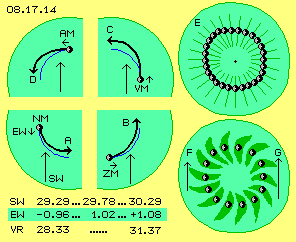
Die in obigem Bild 08.17.11 gezeichnete ´Schlinger-Bahn´ des Mondes setzt sich aus diesen ungleichförmigen Phasen zusammen. Der Mond bewegt sich relativ zur Erde also weder auf einer kreisförmigen, noch einer elliptischen Bahn. Und auch die Geschwindigkeiten weisen große Unterschiede auf, wie in diesem Bild unten links aufgelistet ist:
Die Geschwindigkeit der Erde (und damit der Strömung des Sonnen-Wirbels SW) wird mit minimal 29.29, durchschnittlich 29.78 und maximal 30.29 km/s angegeben. Der Mond (und damit der Erd-Wirbel EW auf diesem Radius) soll mit minimal 0.96, durchschnittlich 1.02 und maximal 1.08 km/s unterwegs sein. Der Mond driftet also mit Geschwindigkeiten zwischen 28.33 bis 31.37 km/s durch den Raum. Seine Geschwindigkeit variiert also um plus/minus sechs Prozent.
Un-wuchtiger Wirbel
Oben rechts in diesem Bild bei E sind 28 Positionen des Mondes eingezeichnet, welche seine ungleichförmige Bahn um die Erde schematisch skizzieren. Nicht nur die Mond-Bahn, sondern auch der ganze Erde-Wirbel wird durch diese überlagernden ´Winde´ deformiert, wie durch diese ungleichförmige Scheibe angezeigt wird. Es finden keine mechanisch exakten Bewegungen statt, der Ablauf ist eher mit Luftströmungen zu vergleichen: auf der Nordhalbkugel bewegt sich die Luft insgesamt meist von West nach Ost. Eingelagert darin sind ebenfalls linksdrehenden Tiefdruck-Gebiete, die aber niemals perfekt kreisförmige Wirbel darstellen. Generell stellen diese Luftbewegungen ebenfalls Potentialwirbel dar, jedoch bewegen sich darin die Kalt- und Warmfronten unterschiedlich schnell.
Im Gegensatz zur Luft kann der Äther keine Dichte-Unterschiede aufweisen und aufgrund seiner Homogenität müssen auch seine schlagenden Bewegungskomponenten im gesamten Erde-Whirlpool synchron verlaufen (nach außen hin aber in immer schwächerem Umfang). Auch innerhalb der Wirbelscheibe kann das Schlagen lokal unterschiedliche Stärke aufweisen (analog zu vorigen Wetter-Fronten).
Dieser Äther-Wirbel wird nur sichtbar durch die Bewegungen des Mondes, der prinzipiell in dieser Strömung driftet. Der Mond bietet der Strömung eine Angriffsfläche, andererseits werden die Ätherbewegungen durch die Trägheit dieser Ansammlung von Atomen beeinflusst. Der Mond widersetzt sich zunächst der Beschleunigung in obiger Phase des zunehmenden Mondes, bis der Voll-Mond seine maximale Vorwärtsgeschwindigkeit erreicht hat. Andererseits bringt der abnehmende Mond ´überschießende´ Geschwindigkeit mit und aufgrund dieser Trägheit setzt die nachfolgende Verzögerung erst etwas später ein.
Der Mond benimmt sich praktisch wie ein Stück Holz im Wasser. Einerseits driftet es rein passiv mit der Strömung, andererseits beeinflusst es bei Änderungen der Geschwindigkeit oder der Richtung auch die Wasser-Bewegungen. Genauso wirken die Äther-Bewegungen auf den Mond und andererseits werden durch dessen Trägheit die Äther-Strömungen verzögert bzw. verstärkt. In diesem Bild unten rechts ist schematisch angezeigt, wie sich vor und hinter und seitlich vom Mond somit ´Bugwellen´ ausbilden. Wie bei obigem Beispiel der Wetter-Fronten zeigt der Mond damit besonders ´turbulente´ Bereiche an. Der ganze Erde-Äther-Whirlpool dreht nicht gleichförmig, vielmehr schwingen besonders intensive Äther-Bewegung um die Erde herum, jeweils in Richtung zum Mond und jeweils mit etwas ´Verspätung´.
Generell dreht der Mond auf der Sonnen-Seite (Neumond) am langsamsten, relativ zur Erde wie auch relativ zur Sonne, weist dort also die geringste Geschwindigkeit im Raum auf. Auf seinem äußeren Bahn-Abschnitt dreht der Mond am schnellsten um die Erde wie um die Sonne, bewegt sich also mit maximaler Geschwindigkeit im Raum (siehe Pfeile F und G).
Geschwindigkeits-Differenzen
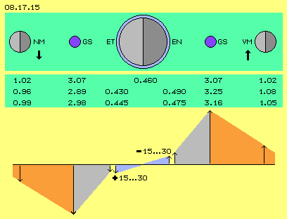
In Bild 08.17.15 sind oben die relevanten ´Staubkörner´ in verschiedenen Positionen skizziert: der Mond links als Neumond NM und rechts als Vollmond VM, mittig die Erde mit ihrer Tag- und Nacht-Seite ET bzw. EN, dazwischen zwei geostationäre Satelliten GS. Darunter sind die durchschnittlichen Geschwindigkeiten des Mondes mit 1.02 km/s, der Satelliten mit 3.07 km/s sowie die 0.46 km/s der Dreh-Geschwindigkeit am Äquator aufgelistet.
In der zweiten Zeile sind die minimale und maximale Geschwindigkeit des Mondes mit 0.96 km/s und 1.08 km/s angegeben. Wenn man diese Differenzierung von plus/minus 6 Prozent auf die Bewegung der Satelliten anwendet, fliegen diese auf der Sonnenseite mit langsamen 2.89 km/s und auf der Nachtseite mit schnellen 3.25 km/s. Abgesehen von diesen Extremwerten wird der Mond in seiner langsamen Phase (bei Neumond) mit etwa 0.99 km/s und seiner schnellen Phase (bei Vollmond) mit etwa 1.05 km/s drehen. Entsprechende Mittelwerte würden für die Satelliten eine Geschwindigkeit von 2.98 km/s und 3.16 km/s ergeben (siehe dritte Zeile).
Weil sich die geostationären Satelliten genauso schnell drehen wie die Erd-Oberfläche, muss sich der Äther dazwischen wie ein starrer Wirbel verhalten. Man kann somit die Geschwindigkeiten der Satelliten linear auf den Erd-Radius herunter rechnen. Dann ergeben sich für den Äther an der Erd-Oberfläche an der Tag-Seite 0.430 bis 0.445 km/s und an der Nacht-Seite 0.475 bis 0.490 km/s (jeweils als extremer und mittlerer Wert).
Unten in diesem Bild sind diese Geschwindigkeiten graphisch dargestellt. Jeweils von der geostationären Bahn nach außen bilden die Ätherbewegungen einen Potentialwirbel mit hyperbolisch abfallendem ´Ätherwind´ (rot markierte Flächen). Von dieser Satelliten-Höhe einwärts ist ein starrer Wirbel (graue Flächen) gegeben mit kontinuierlich abfallenden Geschwindigkeiten. Die Erde ist ein starrer Körper und dreht am Äquator immer mit konstant 0.46 km/s. Zum umgebenden Äther ergibt sich dann rechnerisch eine Differenz von 15 bis 30 m/s. Auf der sonnen-zugewandten Seite dreht die Erde zu schnell und auf der sonnen-abgewandten Seite ist die Erde zu langsam gegenüber dem benachbarten Äther. Dort müsste theoretisch also eine Strömung von etwa 15 bis 30 m/s, also etwa 50 bis 100 km/h zu spüren sein. Ist das der ´Äther-Wind´, den Michelson/Morley messen wollten?
Michelson / Morley
Bevor Einstein kurz nach 1900 die Existenz des Äthers negierte, wurden unter Physikern heftig die Eigenschaften eines ´Licht-Äthers´ diskutiert. Man war sich nicht einig über seine Konsistenz, ob er sich nur innerhalb der Materie befindet, ob er von Himmelskörpern mitgezogen wird oder ob er stationär sei und damit die Erde durch dieses ruhende Fluid rasen würde. Diskutiert wurde auch damals schon, ob die Lichtgeschwindigkeit konstant wäre.
Michelson und Morley führten dazu 1881 / 1887 die bekannten Experimente durch: sie spiegelten Lichtstrahlen quer und längs, mit und gegen die Bewegung der Erde. Da diese mit rund 30 km/s um die Sonne fliegt, erwarteten sie Differenzen von 60 km/s. Gemessen (bzw. rechnerisch ermittelt) wurden aber nur 8.8 km/s, ein viel zu geringer Wert. Auch bis 1926 ergaben sich Resultate von nur 7.5 bis 10 km/s. Darum wird allgemein von einem Null-Ergebnis dieser Experimente gesprochen und als Beweis gegen die Existenz eines Äthers gewertet.
Brillet und Hall experimentierten in 1978 mit Lasern auf drehbaren Messgeräten. Sie ermittelten viel kleinere Werte von 16 m/s +/- 20 m/s, die erstaunlich genau zu obiger Differenz von etwa 15 bis 30 m/s passen würden. Andererseits ergaben sich auch Geschwindigkeits-Differenzen von 190 m/s, die in Zusammenhang mit den 960 m/s der Drehung der Erde um die Sonne und den 460 m/s der Eigenrotation der Erde stehen könnten - und galaktischen Winden? Interessanterweise ergaben sich jeweils zwei Maxima und zwei Minima quer dazu (siehe unten).
Zweifelsfrei ist das Licht in unterschiedlichen Medien unterschiedlich schnell bzw. wird gebrochen oder gebeugt (siehe z.B. Kapitel ´04.03 Lichtäther´). Überall wo der Äther nicht völlig neutral ist, z.B. in den weiten Whirlpools um die Planeten, wird das Licht durch das dort dominante Schlagen beeinflusst. Sehr viel weiter als die Atmosphäre und die lokale Gravitation eines Himmelskörpers hinaus reicht, wird das Licht in deren Nähe beeinflusst. Dieses ist z.B. durch die ´Tropfenbildung´ beim Venus-Transit besonders eindeutig. Die Umrisse ´verschwimmen´, wenn die Venus zur Kante der Sonnenscheibe kommt bzw. diese wieder verlässt. Insofern wird das Licht gewiss auch im Bereich des Erde-Äther-Wirbels variable Geschwindigkeit aufweisen.
Insgesamt aber gehen die obigen Experimente von völlig falschen Voraussetzungen aus: sie unterstellen dass es einerseits Materie gäbe und andererseits einen Äther, dass sich also ´feste Teilchen´ (Erde oder Photonen) durch den Äther hindurch bewegen würden. Erst mit dieser Äther-Physik wird klar definiert, dass es real keine Materie gibt, sondern ausschließlich der lückenlose Äther existiert und nur die Muster individueller Bewegungen durch den Raum wandern. Für den Nachweis dieses Äthers gibt es sehr viel konkretere Hinweise, z.B. die Bewegungen von Wasser oder Luft, und den ultimativen Beweis durch die ´unerlaubte´ Bewegung von Satelliten, die eigentlich still stehen sollten.
Gezeiten
Etwa alle zwölf Stunden gibt es eine ansteigende Flut und eine abfallende Ebbe. Der Tidenhub variiert in etwa wöchentlichem Rhythmus, er ist bei zu- und abnehmendem Mond relativ gering, bei Neumond anschwellend und besonders hoch bei Vollmond. Darum wird allgemein unterstellt, dass die Anziehungskraft des Mondes für die Gezeiten ursächlich ist. Diese Erscheinung ist weltweit gegeben, allerdings in unterschiedlichem Umfang. Beispielsweise drückt der Golfstrom durch den Kanal in die Nordsee mit Tidenhub über zehn Meter. Umgekehrt sind z.B. im weiten Pazifik die Gezeiten sehr konstant bei mäßigem Tidenhub von nur etwa 1.5 m Höhe.
In Bild 08.17.16 zeigt oben eine Graphik diese Schwankungen über dem ´See-Karten-Niveau´ (des absolut niedrigsten Wasserstandes, siehe blaue Linie NW). Oben sind kalendarisch die Mondphasen im Juni 1955 eingezeichnet mit Neumond NM, zunehmendem Mond ZM, Vollmond VM und abnehmendem Mond AM. Jeden Tag gibt es zwei Tiden, der niedrigste Wasserstand der jeweils in der Nacht statt findenden Tide ist durch eine rote Kurve markiert.
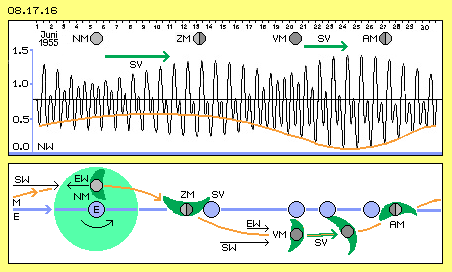
Wenn man den jeweils höchsten Wasserstand beobachtet ist klar zu erkennen, dass das maximale Schwingen keinesfalls bei Neumond statt findet, sondern erst kurz vor Halbmond. Ebenso verzögert sich die hohe Flut gegenüber dem Vollmond um drei bis vier Tage. Diese ´Spring-Verspätung´ (SV, siehe grüne Pfeile) ist weltweit gegeben - und ist nicht zu erklären durch vermeintliche Anziehungskräfte des Mondes oder der Sonne oder sonstiger Abweichungen der Schwerkraft durch unterschiedliche Masseverteilung.
Aufgestaut und angetrieben
Die Erscheinung der Gezeiten kann niemals auf Gravitation basieren, auch wenn das noch so oft verbreitet wird. Sie resultiert vielmehr aus dem Zusammenwirken der Äther-Whirlpools um die Sonne und die Erde, wie es schematisch in diesem Bild unten skizziert ist.
Eingezeichnet sind wieder die kalendarischen Symbole für die Mondphasen (NM, ZM, VM und AM). Die Sonne ist weit oberhalb des Bildes positioniert, der ´Sonnen-Wirbel´ SW schiebt die Erde E von links nach rechts (hier vereinfacht als gerade blaue Bahn markiert). Der Ätherwirbel um die Erde ist linksdrehend (hier nur ein mal als hellgrüne Kreisfläche markiert). Der Mond schwingt um die Erde und befindet sich einmal nahe zur Sonne (oben, bei Neumond) und einmal auf seinem äußeren Bahnabschnitt (unten, bei Vollmond).
Bei Neumond sind die Vektoren des Sonnen-Wirbels SW und des Erd-Wirbels EW entgegen gesetzt gerichtet, so dass der Mond nur langsam voran kommt. Wie oben ausgeführt wurde, verspätet sich der Prozess durch die Masse-Trägheit des Mondes und es bildet sich eine ´Bugwelle´ (dunkelgrün markiert). Diese Welle intensiver Verzögerung trifft auf der Erdoberfläche erst bei zunehmendem Halbmond ZM ein, woraus sich diese ´Spring-Verspätung´ SV ergibt.
In der nachfolgenden Phase weisen die Vektoren des Sonnen-Wirbels SW und des Erd-Wirbels EW in gleiche Richtung, so dass der Vollmond VM beschleunigt nach vorn fliegt. Aber auch hierbei erreicht der Mond erst etwas später seine maximale Geschwindigkeit, so dass seine intensive ´Bugwelle´ erst drei bis vier Tage nach Vollmond zur Erdoberfläche kommt (wobei sich die Welle seitwärts mit rund 1 km/s ausbreitet). Nach dieser Spring-Verspätung SV erreicht das Schwingen des Wasserstandes sein Maximum.
Der Mond hat also durchaus Einfluss - nicht durch Anziehungskraft, sondern indem er die Intensität des Äther-Schlagens im Whirlpool der Erde beeinflusst. Durch seine Trägheit bei der Verzögerung (auf der Sonnenseite) wie bei der Beschleunigung (auf der Nachtseite) wird das ungleichförmige Schwingen in der gesamten Erde-Wirbelscheibe aufgeschaukelt (Monat für Monat, seit hundert, tausend oder Millionen Jahren). Die Stellung des Mondes zeigt somit an, wo momentan besonders intensive Bewegung gegeben ist (was oben als ´Bugwelle´ bezeichnet wurde). Die Erde dreht sich täglich durch diese beiden Gebiete unterschiedlich schneller bzw. intensiver Ätherbewegung. Diese Schwankungen wirken auf die Erde insgesamt und ihre beweglichste Masse, das Wasser der Ozeane, folgt diesen Änderungen.
Zu langsam und zu schnell
In Bild 08.17.17 ist links skizziert, warum die Charakteristik der Gezeiten so unterschiedlich ist. Die Erde E bewegt sich nach oben, angetrieben vom Sonnen-Wirbel SW. Die Tag-Seite T der Erde ist also links, die Nacht-Seite N rechts. Der Erde-Äther-Wirbel ist linksdrehend und wie oben bei Bild 08.17.15 erläutert, ist er auf der Nacht-Seite mit maximal 0.49 km/s wesentlich stärker als auf der Tag-Seite mit minimal 0.43 km/s (siehe Pfeile).
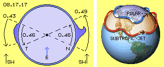
Die Erde rotiert darunter mit ihren konstant 0.46 km/s (am Äquator). Sie ist damit rechts zu langsam, d.h. dort peitscht ein ´Ätherwind´ zu hohen Wellen auf. Umgekehrt ist die Erde links zu schnell gegenüber der Geschwindigkeit des dortigen ´Ätherwindes´. Dieser hält das Wasser zurück bzw. die Erde ´läuft unter dem Wasser hindurch´. Es findet dort also ein relativ sanftes Ansteigen des Wasserstandes statt, der zudem erst mit zeitlicher Verzögerung sein Maximum erreicht (und zur größeren Spring-Verspätung führt).
Gravitation wirkt insofern, als diese Wasser-Anhäufungen durch die Schwerkraft der Erde wieder platt gedrückt werden, bis unter den mittleren Pegelstand. Daraus ergeben sich die Tiden-Ströme. Das Wasser schwingt also in vertikaler wie horizontaler Richtung. Obige Differenz von 15 bis 30 m/s sind theoretische Werte, der reale Ätherwind nahe der Erdoberfläche kann stärker oder schwächer blasen. Generell aber ist dieser Prozess die wahre Ursache für die Erscheinung der Gezeiten, sowohl hinsichtlich ihres zeitlichen Verlaufes wie der unterschiedlichen Charakteristik der zwei mal je Tag auftretenden Flut und Ebbe.
Jet-Streams
Zehn bis fünfzehn Kilometer darüber rasen reale Winde, die Jet-Streams, die aus rein meteorologischer Sicht nicht zu begründen sind. In vorigem Bild 08.17.17 ist rechts der prinzipielle Verlauf dieser Luftströmungen schematisch dargestellt: zwischen 40 und 60 Grad Breite fließt der Polar-Jetstream und nochmals zwischen 20 und 30 Grad Breite ´mäandert´ der Subtropische-Jetstream um den Globus. Diese Winde erreichen beachtliche Geschwindigkeiten von 200 bis zu 500 km/h.
Die Stärke voriger Tiden-Ströme werden stark beeinflusst durch regionale, geographische Bedingungen. In der Luft haben lokale Druck- und Temperatur-Differenzen nochmals größeren Einfluss auf die Strömungen. Die Jet-Streams werden oft begleitet von darunter liegenden Hoch- und Tiefdruck-Gebieten. Aber diese bodennahe Wetter-Erscheinungen reichen nicht aus, um die extrem schnellen, kompakten und relativ dauerhaften Jet-Streams in großer Höhe zu begründen. Ich vermute, dass auch diese Erscheinung durch die ´Äther-Winde´ verursacht bzw. zumindest ausgelöst wird.
Dafür sprechen folgende Merkmale: die Nord-Polar-Jets werden stark beschleunigt und dabei nach Süden gedrückt und nachfolgend aufgestaut und wieder nach Norden umgelenkt. Die Subtropischen-Jets schwingen sehr regelmäßig nach Süden und zurück nach Norden. Die Wasserströmungen fließen im Atlantik und im Pazifik von Ost nach West und parallel dazu die Passatwinde. Über diesen aber jagen die Jet-Streams von West nach Ost - im Gegensatz zu allen sonst gültigen meteorologischen Gesetzmäßigkeiten. Ich möchte dieses Thema nicht vertiefen, wohl aber ergeben sich weiter unten bei anderen Erscheinungen wiederum die genannten Merkmale.
Exzentrische Verhältnisse
In Bild 08.17.18 ist oben noch einmal die Erde E (hellblau) gezeichnet, welche sich am Äquator mit diesen rund 0.46 km/s um ihre Achse dreht (siehe blaue Pfeile). Der Sonnenwind SW ist hier wiederum aufwärts gerichtet, so dass rechts der ´Ätherwind´ mit bis zu 0.49 km/s an der Erdoberfläche entlang streicht (siehe grüner Pfeil). Auf der Sonnenseite (links) reduziert sich diese relative Strömung auf etwa 0.43 km/s (siehe roter Pfeil).
Wie oben ausgeführt wurde, ergeben sich daraus die Gezeiten-Ströme in den Meeren. Dieses zeitweise Schieben und Verzögern wirkt natürlich auch auf die Erdoberfläche selbst, was zu Beulen und Dellen führt (ohne vermeintliche Anziehungskraft des Mondes). Das brüchige Gestein der Erdkruste wird gedehnt und gestaucht. Jedermann weiß, dass sich kein Haar-Riss wieder komplett schließen lässt - und allein damit schon lässt sich das vieldiskutierte Wachstum der Erde erklären.
Obwohl der ´Sonnen-Wind´ im Bereich der Erde ziemlich konstant die Erde vorwärts treibt, ist der Wind-Druck auf der Nacht-Seite immer etwas stärker als auf der Tag-Seite. Allein dadurch wird die Erde ´um die Kurve gedrückt´, fliegt also im Kreis um die Sonne herum - ohne dass diese eine vermeintliche Anziehungskraft ausüben müsste.
In diesem Bild oben links ist eine andere Konsequenz aufgezeigt: die Wind-Differenzen werden egalisiert, wenn das Zentrum der Erde (schwarzer Punkt EZ) etwas nach links rückt gegenüber dem Zentrum des Äther-Wirbels (schwarzer Punkt WZ). Dann sind links und rechts die relativen Geschwindigkeiten gleich groß (bei etwa 0.46 km/s, siehe blaue Pfeile im grünen und roten Segment). Die Erde wird also zwangsweise etwas zu Seite rücken innerhalb ihres Äther-Whirlpools. Ihr Mittelpunkt ist damit immer etwas exzentrisch versetzt, immer zur Sonne hin - und keinesfalls etwas weiter weg vom Mond, wie vermeintlich als gemeinsames Gravitations-Zentrum von Erde plus Mond unterstellt wird.
Diese Differenz von plus/minus 30 m/s ist etwa 1/15 der durchschnittlichen Geschwindigkeit. Das Erdzentrum müsste also um 1/15 des Erdradius versetzt sein, also rund 400 km. Allerdings stellt diese Differenz das Maximum am Äquator dar und diese Exzentrität wäre viel zu groß für die Verhältnisse auf anderen Breitegraden. Ich vermute darum, dass die Erde nur um maximal 200 km gegenüber dem Zentrum ihres Whirlpools zur Sonne hin versetzt ist (siehe oben rechts im Bild).
Exzentrische Orbits
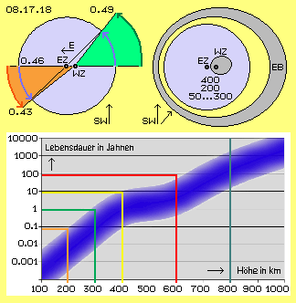
Das Schlagen des Äthers stellt zumindest bis zur Bahn der geostationären Satelliten einen starren Wirbel dar. Dennoch bewegt er sich nicht wie ein starres Rad mit einem Radius von 40 000 km und überall gleicher Winkelgeschwindigkeit. Dieser Whirlpool bewegt sich vielmehr wie ein Wasserwirbel oder Tornado mit einem um das Zentrum ´taumelndem Rüssel´. Es ist also höchst wahrscheinlich, dass dieses Wirbelzentrum WZ innerhalb einer Fläche (dunkelgrau) schwingen wird. Der Erdmittelpunkt EZ wird immer links davon positioniert sein, das aktuelle Wirbelzentrum WZ etwa 50 bis 300 km rechts davon.
Dieser Wirbelkern wird wiederum keine exakte Kreisbahn beschreiben, vielmehr nach rechts ausgedehnt sein bzw. in Richtung des Sonnenwindes ´verblasen´ sein (wie z.B. durch die schwarzen Pfeile in vorigem Bild 08.17.14 aufgezeigt ist). Der hier skizzierte Bewegungsspielraum ergibt sich also, wenn der Sonnenwind in diesem Bild aufwärts oder aufwärts-diagonal gerichtet ist (siehe Pfeile SW rechts-oben).
Ein deutliches Indiz dafür sind die Bahnen der Satelliten. Die erdnahen Beobachtungs-Satelliten müssen ständig nachgesteuert werden, um sie auf einer konstanten Höhe von z.B. 50 km zu halten (und darum sind diese nur relativ kurze Zeit nutzbar). Auf einer exzentrischen Bahn fliegen Satelliten mit sehr viel geringerem Steuerungsaufwand, z.B. auf Orbits zwischen 100 und 300 km Höhe. Noch länger sind Satelliten nutzbar auf nochmals höheren Bahnen von 200 und 600 km. Sie driften dann einfach im Whirlpool des Äthers, wobei ihre Schleifen-Bahnen natürlich auch um die Erde taumeln werden. Ich weiß das nicht, aber ich behaupte nun, dass diese Satelliten auf exzentrischen Bahnen (EB, grau markierter Ring) vorwiegend der Erde am nächsten sind jeweils zur Sonne hin. Ihre erd-fernsten Positionen werden sie zur Nacht-Seite aufweisen oder die Bahn wird in Richtung des Sonnen-Windes abgedrängt sein (siehe Pfeile SW).
Weltraum-Schrott
Ein weiteres Indiz für obige Behauptungen zum Äther-Whirlpool der Erde stellt die ´Lebenserwartung´ des Weltraum-Schrotts dar. Zehntausende Bruchstücke umkreisen die Erde, mehr als tausend ´gefährliche´ Teile werden ständig beobachtet. In diesem Bild 08.17.18 zeigt eine offizielle Graphik, wie lang in welcher Höhe diese Teile vermutlich verbleiben werden. Ich habe darin nur einige Linien zusätzlich eingezeichnet, um die Aussage zu verdeutlichen.
Alles was unter 100 km hoch fliegt, wird in wenigen Tagen (0.01 Jahre) herunter fallen (weil dort tatsächlich noch die Erd-Gravitation wirksam ist). Aber auch alles aus 200 bis 300 km Höhe wird binnen eines Monats oder eines Jahres herunter gewischt (weil so weit obige Exzentrität des Wirbelkerns reichen könnte). Zwischen 400 und 600 km ist die Kurve seltsam flach, d.h. diese Teilchen ´segeln in stetigem Wind´. Sie sind aber der Strahlung der Sonne ausgeliefert und werden früher oder später ´heruntergebremst´. Oberhalb von 800 km werden wir den Weltraum-Schrott kaum mehr los, er hält sich dort zehn oder auch zehntausend Jahre (ein durchaus problematisches Phänomen, siehe unten).
Die Zeitachse ist in dieser Graphik logarithmisch gezeichnet. Bei einer linearen Darstellung würde man erkennen, wie schnell diese Partikel in geringer Höhe durch die Gravitation herunter fallen und darüber die Partikel durch den exzentrisch schwingenden Wirbelkern eingefangen werden. Obwohl nach gängiger Lehre ein sehr labiles Gleichgewicht zwischen Anziehungs- und Fliehkräften gegeben ist, fliegt der Schrott aus größeren Höhen weder ins Weltall davon, noch fällt er auf die Erde zurück - weil er im Äther-Whirlpools der Erde gefangen bleibt.
Geostationäre Satelliten
Ein vollkommenes Gleichgewicht zwischen Flieh- und Anziehungskraft besteht bei geostationären Satelliten, welche zudem synchron zur Erde drehen. Auf deren Position sind die Parabol-Antennen fest ausgerichtet und damit sind wir jederzeit auf aktuellem Stand hinsichtlich allem was die Kommunikations-Medien zu bieten haben. Die physikalischen Grundlagen für die Installation eines geostationären Satelliten sind einfach, wie schematisch in Bild 08.17.19 links skizziert ist.
Senkrecht über dem Äquator, genau 42164 km vom Mittelpunkt der Erde E (blau) entfernt, muss der Satellit GS (grauer Punkt) mit genau 3.073 km/s auf die gewünschte Position gebracht werden. Aufgrund seiner Trägheit (Pfeil TK) will der Satellit tangential davon fliegen. Auf diesem Radius ist die Anziehungskraft (Pfeil AK) der Erd-Gravitation genau so stark, dass der Satellit auf einer kreisförmige Bahn gehalten wird. Ohne weiteren Antrieb umrundet der Satellit dann den Erd-Mittelpunkt, genau so schnell wie die Erde sich dreht. Von einem Ort auf der Erd-Oberfläche ist der Satellit damit immer in gleichem Winkel über dem Horizont und zum jeweiligen Längengrad zu sehen. Der Satellit scheint damit geostationär, also regungslos über der Erdoberfläche zu ´stehen´.
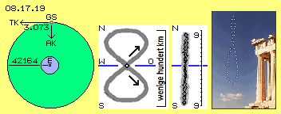
Leider steht wieder einmal die Praxis völlig konträr zur bekannten und klaren Theorie: ohne steuernde Eingriffe ´tanzt´ der Satellit täglich auf einer 8-förmigen Bahn oder ´schlingert´ einmal von Nord nach Süd und zurück nach Nord (siehe Bildmitte). Dieses ständige Abweichen von der vorgegebenen Position über dem Äquator (blaue Linie) beträgt ´nur wenige hundert Kilometer´ oder maximal ´nur zehn Grad´. Schlimmer noch ist, dass nur in vier Positionen über dem Äquator geostationäre (oder wenigstens geosynchrone) Satelliten einigermaßen stabile Positionen halten.
Dieser eklatante Verstoß gegen strikte ´Gesetze der Mechanik´ wird weg-diskutiert mit diversen Störfaktoren - die nicht zutreffen können: der zusätzliche Einfluss von Anziehungskräften der Sonne oder des Mondes müssten jahreszeitliche oder monatliche Abweichungen ergeben (die nicht vorhanden sind). Unregelmäßige Verteilung von Masse in der Erdkruste und damit unterschiedliche Erd-Gravitation kann keine Rolle spielen, weil die Satelliten prinzipiell über dem gleichen Ort stehen. Natürlich sind die Satelliten der Strahlung und dem Partikelstrom der Sonne ausgeliefert, aber auch damit lassen sich die täglich und regelmäßig auftretenden Abweichungen nicht erklären. Das Verhalten geostationärer Satelliten widerlegt schlicht und einfach die geltenden Theorien der Himmelsmechanik.
Analemma-Kurve
Es gibt eine analoge Erscheinung am Himmel in Form der ´Analemma-Kurve´: wenn an einem Ort jeden Tag zur gleichen Welt-Zeit der Stand der Sonne festgehalten wird, ergeben deren Positionen eine 8-förmige Kurve (siehe rechts im Bild). Das Auf-und-Ab ergibt sich aus der Neigung der Erdachse zur Ekliptik. Das Vor-und-Zurück ergibt sich aus der elliptischen Bahn der Erde und der damit (laut Kepler-Gesetz) variierenden Geschwindigkeit. Zudem steht die Sonne exzentrisch in dieser Bahn (angeblich im Brennpunkt der Ellipse - sofern dieser für eine ungleichförmige Bahn zu definieren wäre). Im Winter ist die Erde der Sonne am nächsten (aber erst am 2. Januar, während die Winter-Sonn-Wende schon am 21. Dezember ist). Die Erde fliegt im Winter relativ schnell und dadurch ist das Winter-Halbjahr um eine Woche kürzer als der Sommer. Dort ist die Erde wiederum erst ein paar Tage nach der Sommer-Sonnwende in ihrer sonnen-fernsten Position.
Aus all diesen ´schrägen Verhältnissen´ ergibt sich diese asymmetrische Analemma-Kurve, an jedem Ort und zu jeder Zeit in unterschiedlicher Form, anhand exakter Formeln einfach zu berechnen. Seltsamerweise gibt es wenige fotographische Belege für diese theoretische Exaktheit. Bei den geostationären Satelliten dagegen ist täglich der Beweis gegeben - dass sich Himmelsobjekte nicht an die rechnerischen Vorgaben halten. Wenn aber diese Satelliten eine vergleichbare ´Spur´ zeichnen wie die Sonne relativ zur Erde, müssen auch für die Satelliten zusätzliche, ganz reale Bedingungen vorhanden sein.
Vom Winde verweht
In Bild 08.17.20 sind einige schematische Skizzen dargestellt, mit welchen die vermeintliche Problematik leicht aufzuklären ist. Oben links sind geostationäre Satelliten (GS, graue Punkte) in diversen Positionen eingezeichnet. Nach gängiger Lehre müssten sie sich mit konstanter Winkelgeschwindigkeit um die Erde E (blau) drehen, je Zeiteinheit also gleiche Strecken zurück legen. Die Satelliten sind aber nicht über ´Speichen´ mit der Erde fest verbunden, die Drehung erfolgt nicht wie bei einem starren Rad (und dessen mechanischer Gesetzmäßigkeit). Andererseits bewegen sich die Satelliten auch nicht im ´luftleeren Raum´.
Alle Bewegungen von Himmelskörpern sind determiniert durch das asymmetrische Schlagen des Äthers im weiten Umfeld. Diese Bewegungen werden hier (nur im übertragenen Sinne bzw. vereinfachend) als ´Whirlpool bzw. Wind´ des Äthers bezeichnet. In diesen ´Strömungen´ driften alle materiellen Teilchen. Oben rechts ist hellblau ein Bereich markiert, welcher die Strömung des ´Sonnen-Whirlpools´ repräsentiert (siehe Pfeil SW). Am Radius von rund 150 Millionen Kilometern weist er eine Geschwindigkeit von rund 30 km/s auf, mit welcher die Erde E (dunkelblau) durch den Raum driftet.
Eingebettet in diesem Sonnen-Whirlpool ist der Äther-Whirlpool der Erde. Hier ist als hellgrüne Kreisfläche EW nur der Bereich bis zum Radius von rund 40000 km eingezeichnet. Diese ´Strömung´ hat auf dieser Höhe der geostationären Satelliten eine Geschwindigkeit von rund 3 km/s (siehe Pfeile). Er übt dort jeweils tangentialen Schub auf materielle Teilchen aus, z.B. die dortigen Satelliten (siehe dunkelgrüne Linien). Je nach Vektor wird damit die Geschwindigkeit des Sonnen-Whirlpool reduziert, z.B. bei A angezeigt durch die roten, nach links gerichteten Linien, so dass dort (auf der Sonnen-Seite) die Vorwärts-Strömung teilweise bis auf etwa 27 km/s reduziert ist. Umgekehrt addieren sich unten (auf der Nacht-Seite) beide Strömungen, wie bei B durch die grünen Linien angezeigt ist, so dass die Vorwärts-Bewegung bis zu etwa 33 km/s betragen kann.
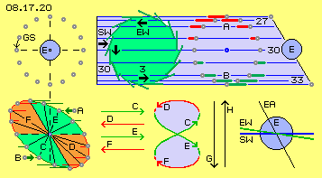
Die Erde wird immer mit diesen durchschnittlich 30 km/s im Raum vorwärts geschoben. Wenn ein Satellit sich momentan zwischen Erde und Sonne befindet, kommt er im Raum sehr viel langsamer voran, auf der Nacht-Seite fliegt er entsprechend schneller voran. Natürlich sind die Größenverhältnisse in diesem Bild extrem überzeichnet. Die Erde fliegt z.B. je Tag rund 2600000 km vorwärts. Der Satellit hinkt der Erde phasenweise 40000 km hinterher bzw. eilt ihr voraus. Binnen zwölf Stunden bewegt er sich im Raum also 1340000 km oder nur 1260000 km vorwärts. Stark überzeichnet ist somit auch die Relativ-Bewegung unten links im Bild.
Vorwärts-Puschen und Zurück-Halten
Wenn der Satellit in der generellen Strömung hinter her hinkt, befindet er sich (in diesem Bild) links von der Erde (bzw. steht dort am Abend). Er kommt danach in den Bereich der schnelleren Strömung, wird also beschleunigt vorwärts getrieben, wie unten links bei B angezeigt ist. Diese Beschleunigung dauert an bis er querab zur Erde steht (also um Mitternacht). Der Satellit ´überholt rechts in Fahrtrichtung´ die gleichmäßig vorwärts driftende Erde. Gegenüber deren gleichmäßiger Drehung scheint der Satellit vorwärts zu wandern nach Ost. Dieser Sektor C beschleunigter Bewegung des Satelliten ist hellgrün markiert.
Danach weisen die Vektoren des Erde-Whirlpool zunehmend quer zur Strömung des Sonnen-Whirlpools. Der Satellit driftet in dieser Strömung, wobei der vorige Schub immer kleiner wird. Der Satellit kommt nun langsamer vorwärts. Gegenüber seinem vorigen Voraus-Eilen erscheint das wie eine Verzögerung, als ob der Satellit wieder nach Westen zurück wandern würde. Dieser Bereich der Rückkehr zu durchschnittlichen Verhältnissen ist hier als Sektor D hellrot markiert.
Danach wandert der Satellit zur Sonne hin und wird dort durch die langsamere Strömung in seiner Vorwärts-Bewegung verzögert, wie z.B. bei A skizziert ist. Die Erde zieht weiterhin mit konstanter Geschwindigkeit vorwärts. Nun also überholt die Erde (in Fahrrichtung wiederum rechts) den Satelliten. Gegenüber ihrer gleichmäßigen Drehung bleibt der Satellit im Raum zurück. Wenn von der Erde aus die Sonne im Zenit steht, befindet sich der Satellit bereits weiter links. Es entsteht der scheinbare Eindruck, als würde der Satellit in diesem hellgrünen Sektor E der Erd-Drehung voraus eilen (so wie man den Kopf drehen muss, wenn man das Auto beobachtet, das man gerade rechts überholt).
Im anschließenden hellroten Sektor F schwenkt der Satellit wieder in die durchschnittliche Strömung ein. Gegenüber vorigem, scheinbaren (im Drehsinn) Voraus-Eilen (das real ein Zurück-Bleiben im Raum war) ergibt diese Rückkehr zum Normalen den Eindruck einer erneuten Verzögerung. Der Satellit wird also nicht wie an einer starren Speiche um die Erde herum geführt, sondern driftet einfach in der Strömung, welche sich aus der Überlagerung der beiden Whirlpools ergibt.
Erst aus der Einbeziehung der unterschiedlich schnellen Vorwärtsbewegungen ergibt sich dieses relative Voraus-Eilen und Zurück-Bleiben. Relativ zur konstanten Drehung der Erde resultiert daraus die Beschleunigung (siehe Pfeile C und E unten mittig im Bild) und Verzögerung (siehe dortige Pfeile D und F), im Wechsel und zwei mal am Tag - was ausschließlich mit der realen Existenz dieser realen ´Äther-Winde´ zu erklären ist.
Runde und flache Acht
Daraus ergeben sich also diese Bewegungen in West-Ost-Richtung. Die Nord-Süd-Bewegungen sind einfach zu erklären, wie in diesem Bild unten rechts skizziert ist. Die Ekliptik ist hier als blaue Linie des Sonnen-Whirlpools SW markiert. Gegenüber dieser Ebene ist die Erd-Achse EA um etwa 23 Grad geneigt. Der Erd-Whirlpool EW ist hier als grüne Linie eingezeichnet, welche zur Ekliptik um etwa fünf Grad geneigt ist. Ein geostationärer Satellit bewegt sich nicht entlang der äquatorialen Ebene (wie es die gängige Theorie verlangt), sondern weitgehend in der Ebene des Erde-Whirlpools (so wie der Mond, jedoch in eingeschränktem Umfang, siehe unten).
Ein mal täglich befindet sich damit der Satellit unterhalb bzw. oberhalb des Äquators. Daraus ergeben sich die beiden ´vertikalen´ Bewegungen G und H. Durch Überlagerung mit vorigen ´horizontalen´ Bewegungen (C, D, E und F) ergibt sich die Bahn des Satelliten in Form einer Acht (siehe unten mittig im Bild).
Eine symmetrische Acht ergibt sich aber nur, wenn der Satellit am Kreuzungspunkt der Acht genau in radialer Richtung zur Sonne steht (also über dem Längengrad 0 oder 180 positioniert ist). Eine flache Acht ergibt sich, wenn der Satellit genau rechtwinklig dazu steht. Diese Längengrade bei 90 Grad West und Ost stehen schräg im Raum (parallel zur geneigten Erdachse). Obige horizontale Bewegung kann dann entlang dieser Längengrade verlaufen, so dass der Satellit fast nur in vertikaler Richtung hin und her wandert (wie bei vorigem Bild 08.17.19 mittig).
Bei obigen Erläuterungen zu den Gezeiten und ihrer ´Spring-Verspätung´ wurde festgestellt, dass der Mond erst etwas verspätet auf die wechselnden ´Äther-Strömungen´ reagiert. Die Satelliten folgen aufgrund ihrer geringen Masse-Trägheit viel schneller auf ´wechselnde Winde´. Aber eine Stunde Verzögerung ist dennoch gegeben: die stabilen Positionen befinden sich darum bei 15 und 105 Grad West sowie bei 75 und 165 Grad Ost. Nur dort ´stehen´ die Satelliten einigermaßen geo-stabil, während überall sonst die Bahnen unregelmäßig verwischt sind.
Gesetzes-Treue
Die Analemma-Kurve der Sonne ergibt sich aus gleicher Ursache: im Äther-Whirlpool der Galaxis ist der Sonnen-Whirlpool als ein schräg stehender Randwirbel eingebettet (dieser Wind bläst also nicht unbedingt tangential zum Galaktischen Zentrum). Auch dort überlagern sich vektoriell beide ´Winde´, so dass die Erde phasenweise schneller und wieder langsamer darin driftet (aber zu etwas anderen Zeiten als durch das vermeintlich allgemeingültige Kepler-Gesetz theoretisch immer unterstellt wird). Wie bei den geostationären Satelliten überholt die Erde die Sonne und umgekehrt wird sie wieder von der Sonne überholt bei ihrer Reise durch den Raum.
Gewiss: die Bewegung der Erde um die Sonne wird durch vielfältige Faktoren beeinflusst (z.B. der benachbarten Planeten, der Sonnen-Strahlungen, dem ´Taumeln´ der Achsen von Sonne und Erde usw.) und darum können viele ´Störfaktoren´ für die Abweichung zwischen Theorie und Realität gefunden werden. Dagegen sind praktisch ´ideale Laborbedingungen´ gegeben mit den geostationären Satelliten in unmittelbarer Nähe zur Erde.
Wenn deren Bewegungen aber eindeutig nicht zu erklären (oder weg zu diskutieren) sind mit eben den bekannten Gesetzen und dem geltenden Verständnis der Gravitation - dann können die gängigen theoretischen Modellvorstellungen schlicht und einfach nicht zutreffend sein. Ich kann nur empfehlen, diese unpässlichen ´Phänomene´ anzugehen aus Sicht der hier dargestellten konkreten Bewegungen eines real existenten, lückenlosen Äthers.
Schiefe Ebenen und gekrümmte Scheibe
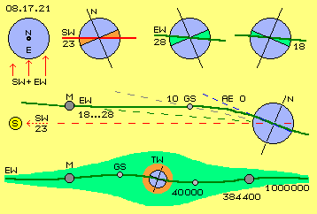
In Bild 08.17.21 oben links ist noch einmal die Erde E (blau) mit Sicht auf den Nordpol N eingezeichnet. Da sich die `Äther-Winde´ der Sonne und der Erde überlagern, wird sie mit unterschiedlichem Druck vorwärts geschoben (siehe Pfeile SW + EW). Wie jeder Kreisel weicht die Erd-Achse rechtwinkelig dazu aus, wie im Bild daneben skizziert ist. Zwischen den Ebenen der Ekliptik (rote Linie SW) und des Äquators ergibt sich dieser Winkel von rund 23 Grad (rote Sektoren). Die Erdachse steht relativ fix im Raum, einerseits wegen der Trägheit der Erde, andererseits wird ihre Stellung vom übermächtigen ´galaktischen Äther-Wind´ bestimmt (hier allerdings nicht relevant).
Die Ebene des Erde-Wirbels (grüne Linie EW) steht nochmals schräg zur Ekliptik, so dass sich je nach Konstellation die Winkel von rund 28 oder auch nur 18 Grad ergeben (grüne Sektoren). In der mittleren Zeile des Bildes ist die Ebene der Ekliptik horizontal eingezeichnet (gestrichelte rote Linie SW, die Sonne S befindet sich weit links). Gegenüber der äquatorialen Ebene AE (blaue gestrichelte Linie) besteht dieser Winkel von rund 23 Grad. Der Mond M (dunkelgrau) ist hier in einer Position von 18 Grad zum Äquator eingezeichnet (siehe graue gestrichelte Linie, welche zu anderen Zeiten auch einen Winkel von 28 Grad bildet). Der Mond befindet sich auf der Ebene des Erd-Wirbels EW (grüne dicke Linie).
Die Erde reagiert wie ein Kreisel auf diesen ungleichen Druck, aber dieses Ungleichgewicht lässt ebenso den inneren Bereich des Erde-Äther-Wirbels kippen. Andererseits zieht die Erdoberfläche den umgebenden Äther mit sich, etwa so wie eine im Wasser rotierende Holzkugel die Wasserschichten an ihrer Oberfläche in ihre Bewegungsrichtung zwingt. Nahe bei der Erde wird also das Schlagen des Äthers parallel zum Äquator verlaufen. Die Scheibe des Erdwirbels EW wird also vom Mond einwärts nicht mehr plan sein, sondern eine Kurve bilden bis sie im Zentrum parallel zum Äquator verläuft (siehe gekrümmte grüne Kurve).
In diesem Bild weist die Scheibe draußen beim Mond einen Winkel von 18 Grad zur Äquatorebene auf. Bei etwa 40000 km Höhe ist die Neigung bis auf etwa 10 Grad reduziert (auch wenn der Mond-Winkel 28 Grad beträgt). Die geostationären Satelliten GS (hellgrau) driften in diesem gekrümmten Bereich des Erd-Wirbels. Darum schwankt ihre Position während eines Tages zwischen etwa 10 Grad Nord und 10 Grad Süd (siehe hellgrau gestrichelte Linie).
Diese Satelliten können auf wirklich geostationärer Position nur gehalten werden durch Steuerungsmaßnahmen gegen diesen fortwährenden Wind. Das kostet Energie und der Treibstoff-Vorrat ist nach zehn bis fünfzehn Jahren aufgebraucht. Zuletzt werden sie etwa 300 km höher auf einem ´Friedhof-Orbit´ abgestellt. Aber auch dort sind sie nicht ´ruhig-gestellt´, sondern pendeln weiterhin zwischen Nord und Süd auf 8-förmiger Bahn, mehr oder weniger flach oder meist ungleichförmig deformiert.
S-förmige Erd-Wirbel-Scheibe
In der unteren Zeile dieses Bildes ist ein Querschnitt durch die ganze Erd-Wirbel-Scheibe skizziert. Anstatt der bislang gezeichneten, geraden Linie ergibt sich nun eine S-förmige Kurve (siehe dicke grüne Kurve EW). Dieser Erd-Wirbel hat natürlich nicht nur eine flächige Ausbreitung (wie bislang skizziert), vielmehr muss der Äther auch oberhalb und unterhalb analoges Schlagen aufweisen. Dieser Bereich ist hellgrün markiert.
An der äußeren Grenze des Wirbels (etwa eine Million Kilometer von der Erde entfernt) ist der Übergang zum Freien Äther, d.h. dort muss die Scheibe nur geringe Stärke aufweisen. Beim Radius von etwa 400000 km driftet der Mond mit etwa 1 km/s und diese schlagende Bewegung muss auch nach oben und unten zum Freien Äther hin ausgeglichen werden. Am Radius von etwa 40000 km ist die Drift der geostationären Satelliten mit rund 3 km/s wesentlich schneller, während im Zentrum die Geschwindigkeit theoretisch null ist. Auf gleicher Distanz müsste das Äther-Schlagen auch in vertikaler Richtung auf null zu reduzieren sein. Im Bereich der geostationären Satelliten könnte die Erd-Wirbel-Scheibe also etwa 80000 km mächtig sein.
Aus Sicht von der Erde ´taumelt´ der Mond am Himmel auf dieser seltsamen Bahn. Aus Sicht von außen auf den Erd-Wirbel zieht der Mond relativ ruhig dahin. Im Zentrum jedoch dreht sich die Erde mit viel höherer Drehzahl, um ihre schiefe Achse, die im Jahresverlauf zudem schwankend ist (relativ zur Wirbel-Ebene). Direkt um die Erde besteht also relativ turbulentes Wirbeln, das hier als roter Ring TW markiert ist. Entsprechend hoch müssen die ausgleichenden Bereiche zu den ´Polen´ des Erd-Wirbels sein (mit einer Relation von Durchmesser zur Mächtigkeit mit etwa zehn-zu-eins). Insgesamt weist der Wirbelkomplex der Erde eine linsen-förmige Kontur auf, die aber keine plane Scheibe, sondern wie ein ´Schlapphut´ deformiert ist. Die reale Ausdehnung in horizontaler und vertikaler Richtung könnte z.B. ermittelt werden anhand der Bahndaten von Himmels-Objekten, welche den Erd-Ätherwirbel diagonal durchqueren.
Diese S-Form entspricht wiederum einer ´Doppelkurbel´, wie bereits oben bei Bild 08.17.03 als Grundform aller Äther-Wirbel dargestellt wurde. Tatsächlich ist dieses Bewegungsmuster eine durchgängige Erscheinung, vom kleinsten Wirbel eines Elektrons und der Atome bis zu den Whirlpools von Sternen und Planeten oder gar der Galaxien.
Elektrostatische Ladung
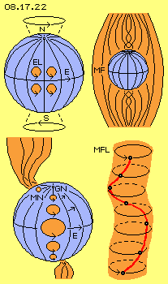
Dieses Drehen um eine Achse mit wechselnder Stellung und innerhalb einer gekrümmten Wirbel-Ebene hat zwei wesentliche Konsequenzen, die in Bild 08.17.22 schematisch aufgezeigt werden. Bei obigem Beispiel der im Wasser drehenden Holzkugel (mit taumelnder Achse) bilden sich Grenzschichten mit vielen kleinen Wirbeln. Analog ist die Situation direkt auf der Oberfläche der Erde E (hellblau), die zwar mir konstanter Drehzahl rotiert (siehe Pfeil am Äquator), aber nicht überall völlig kongruent zum umgebenden Medium, allein schon aufgrund der im Jahresverlauf schwingenden Achse (siehe Kreis-Pfeile bei N und S).
Die Atome an der Erdoberfläche müssen sich in ihrem starren Verbund durch den Raum bewegen. Ein Ausgleich divergierender Bewegungen kann nur im umgebenden Äther statt finden. Direkt an der Erdoberfläche bildet sich darum eine dünne Ätherschicht, deren Bewegung ein kreisendes Schwingen ist. In diesem Bild oben links sind nur vier solcher roten Pfeil-Kreise eingezeichnet, parallel dazu schwingt aber aller Äther an der Erdoberfläche. Es ergibt sich ein Feld synchronen Schwingens, das üblicherweise ´elektrische Ladung´ EL genannt wird. Wir spüren nichts von dieser Elektrostatik, weil alles gleiche Ladung trägt. In der Atmosphäre gibt es viel weniger Atome und Partikel, welche ebenfalls diese generelle Ladung tragen. Die Differenz dieser Ladungsdichte ergibt die wohl bekannte, starke ´Spannung´ zwischen der Erdoberfläche und der Atmosphäre.
Mehr als diese grundsätzliche Aussage soll hier zu diesem Thema nicht ausgeführt werden, weil die detaillierte Beschreibung einen umfangreichen, separaten Teil ´09. Phänomene des Elektromagnetismus´ in dieser Äther-Physik ergeben wird.
Magnetismus der Erde
In diesem Bild unten links ist noch eine Ursache dieser Unruhe des Äthers im Umfeld der Erde dargestellt. Die Erde E (blau) dreht mit konstanter Winkelgeschwindigkeit, je nach Breitengrad ist aber die absolute Geschwindigkeit sehr unterschiedlich (am Äquator rund 0.5 km/s und an den Polen praktisch null), was hier durch Pfeile und rote Kreise unterschiedlichen Durchmessers repräsentiert wird. Auch diese Differenzen müssen durch unterschiedliches Schlagen des umgebenden Äthers überbrückt werden. Diese Divergenzen können durch die dünne Schicht voriger elektrostatischer Ladung an der Erdoberfläche nicht komplett ausgeglichen werden. Es sind vielmehr ausgleichende Bewegungen erforderlich, welche auf Höhen von 60000 oder auch 600000 km hinaus reichen.
Bei obigem Beispiel der im Wasser drehenden Holzkugel ergeben sich analoge Wirbel an deren Oberfläche, aber auch im weiteren Umfeld bewegt sich das Wasser unterschiedlich schnell, so dass sich diverse Grenzflächen bilden. Diese stellen wiederum synchron drehende kleine Wirbel dar. Analog dazu bilden sich um die Erde solche ´Wirbel-Fäden´, wie schematisch in diesem Bild oben rechts skizziert ist. Um die Erde E (blau) ist ein weites ´Feld´ (hellrot) voll solcher ´Feld-Linien´. Im Prinzip verlaufen diese Linien parallel zur Erdachse und vom Nordpol des Erde-Äther-Wirbels bis zu dessen Südpol. Die gängige Bezeichnung dieser Erscheinung ist das ´irdische Magnetfeld´ MF.
Eine einzelne Magnet-Feld-Linie MFL ist in diesem Bild unten rechts dargestellt. Eingezeichnet sind diverse Ätherpunkte (schwarze Punkte) in vertikaler Anordnung. Alle Punkte schwingen gleichermaßen im Raum (siehe Pfeile), allerdings befindet sich jeder Punkt auf seiner Kreisbahn etwas versetzt. Inklusiv aller benachbarter Ätherpunkte dazwischen ergibt sich eine spiralige Anordnung (siehe rote Spiral-Kurve). Bei diesem Bild hinken die jeweils unteren Ätherpunkte immer etwas hinter her. Auch rund um diese Bewegungs-Spirale muss sich der Äther analog bewegen, so dass sich Wirbelzöpfe ergeben und diese wiederum zu ganzen Wirbelbündeln geordnet sind.
Aller Äther ist also überall in spiraligen Bewegungen - nur direkt an den Polen herrscht praktisch Stillstand. Der Kern dieses Wirbelns ist darum nicht am ´ruhenden´ geometrischen Nordpol GN ´verankert´. Der zentrale ´Rüssel´ dieses Wirbelkomplexes zeigt vielmehr auf einen Punkt, an welchem adäquatere Bewegung gegeben ist. Darum befand sich der magnetische Nordpol MN noch nie direkt am geographischen Nordpol GN und dieser Punkt war auch noch nie fix, sondern wandert über die Erdoberfläche (siehe dazu Bild unten links).
Polarisierung und Pol-Sprung
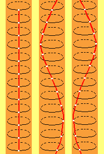
In dieser Animation sind nochmals Magnetfeldlinien dargestellt und deren Bewegungen visualisiert. Die weißen Flächen repräsentieren beobachtete Ätherpunkte und die roten Verbindungslinien benachbarte Ätherpunkte dazwischen. Links im Bild schwingen alle Ätherpunkte linksdrehend und gleichförmig. Auch der Äther seitlich davon schwingt parallel dazu. Viele solch benachbarter ´Fäden´ bilden ein ´magnetisches Feld´ - in dieser neutralen Form allerdings ohne ´Polarisierung´.
In der Bildmitte bewegen sich alle Ätherpunkte in genau gleicher Weise. Die jeweils unteren Punkte hinken auf ihrer Kreisbahn nur jeweils etwas hinterher, so dass die Verbindungslinie nun eine Spirale bildet. Obwohl real der Äther nahezu ortsfest ist (lediglich auf engen, parallelen Kreisbahnen schwingend), ergibt sich die Erscheinung einer zusätzlichen linearen Bewegung: hier einer abwärts gerichteten Strömung. Dieser Vorgang ist analog zu vorwärts stürmenden Meereswellen, die aber eigentlich nur ein lokales, kreisendes Schwingen von Wasserpartikeln sind. Entsprechend scheint hier dieses spiralige Band nach unten zu wandern. Dieses Bewegungsmuster stellt ein von Nord nach Süd ´strömendes Magnetfeld´ dar. Dieses Bewegungsmuster entspricht dem derzeitigen irdischen Magnetfeld. Eine Kompass-Nadel richtet sich danach aus, weil in einem Permanentmagnet bzw. an seinen Polen ebenfalls eine solch spiralige Ätherbewegung existiert.
In diesem Bild rechts bewegen sich die Ätherpunkte ebenfalls gleichförmig linksdrehend, nur eilen hier die jeweils unteren Ätherpunkte auf ihrer Kreisbahn etwas voraus. Auch damit ergibt sich eine spiralige Verbindungslinie - allerdings resultiert daraus nun die Erscheinung, als würde zusätzlich eine Aufwärts-Bewegung gegeben sein (bitte beide Spiralen genau beobachten und vergleichen).
Dieses Bewegungsmuster ergibt also ein Magnetfeld mit vertauschten Polen. Bei einem ´Polsprung´ muss die Erde keinen ´Salto schlagen´, nur die zeitliche Reihenfolge des Schwingens der benachbarten Ätherpunkte in diesen Magnetfeldlinien erfährt dabei einen Wechsel. Derzeit bläst der ´galaktische Ätherwind´ vorwiegend aus nördlichen Richtungen (und schiebt z.B. im Winter die Erde näher zur Sonne hin). Während unserer Reise um das galaktisch Zentrum wird dieser dominante Wind periodisch aus anderer Richtung wehen und damit auch die Ausrichtung dieser spiraligen Bewegung wechseln. Das könnte aber auch schon durch besonders hohe Sonnen-Aktivität während eines (Nord)-Sommers erfolgen, wenn der Partikelstrom von der Sonne vorwiegend auf den Südpol einfällt.
Partikelstrom der Sonne
Die Charakteristik des gesamten Äther-Whirlpools der Erde wurde oben abgeleitet aus den Bewegungen einiger ´Staubkörner´. Auch dieses relativ ´zarte´ Bewegungsmuster des irdischen Magnetfeldes wird nur sichtbar durch Partikel, die unablässig von der Sonne zur Erde fliegen. Dies ergibt z.B. die bekannte Erscheinung des Nordlichtes. Bild 08.17.24 oben zeigt besonders markant das Einrollen eines Wirbel-´Rüssels´ im Magnetfeld polarer Regionen.
Das irdische Magnetfeld reicht nicht quer von Pol zu Pol durch den ganzen Erde-Whirlpool, sondern ist nur ein ausgleichendes Wirbeln auf wenige tausend Kilometer um die Erde herum (und im Erdinnern überhaupt nicht vorhanden). Dieses ´Gekräusel´ wird zudem stark beeinflusst durch den Partikelstrom von der Sonne. In Bild 08.17.24 unten ist dieser Sachverhalt graphisch dargestellt. Im Internet sind ´künstlerische Interpretationen´ dieser Art zu hunderten vertreten, wobei hier z.B. eher ein ´Engel-mit-Flügeln´ portraitiert ist.
Wie eine Kompassnadel richten sich die mit dem Sonnen-Sturm eintreffenden Partikel (ionisierte materielle Teilchen und freie Elektronen) an den Magnetfeldlinien aus. In der Magnetopause bilden sie einen ´massiven Schutzschild´, welcher die Erde vor harter Strahlung bewahrt. Umgekehrt wird damit das ´zarte Gekräusel´ des irdischen Magnetfeldes zu einer Schicht intensiver und geordneter Ätherbewegungen. Der Sonnen-Sturm leistet also einen wesentlichen Beitrag zur Stärkung der magnetischen Bewegungen. Jeweils auf der Tag-Seite wird diese ´Schutz-Glocke´ produziert in einer Höhe von etwa 60000 km (bei starker Sonnen-Aktivität auch komprimiert auf nur etwa 30000 km). Auf der Nacht-Seite wird dieses Bewegungsmuster ausgedünnt bzw. auf bis zu 600000 km davon getragen.
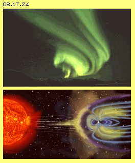
Der Erde-Äther-Wirbel ist also ein Potentialwirbel in den äußeren Bereichen, der in einen starren Wirbel übergeht etwa im Bereich der Magnetopause. Spätestens ab der Höhe der geostationären Satelliten wird das Schlagen des Äther-Schwingens linear reduziert bis zur Erd-Oberfläche. Eigentlich müssten damit ruhige Bewegungen in diesem inneren Bereich des starren Wirbels gegeben sein. Allerdings müssen obige lokale Differenzen überbrückt werden, so dass durchaus turbulente Wirbel resultieren (vergleichbar mit Grenzschichten bei Wasserströmungen).
Das irdische Magnetfeld wird also bedingt durch Ätherbewegungen zum Ausgleich divergierender Geschwindigkeiten an und über der Erdoberfläche. Dabei ergeben sich mikroskopisch dünne Wirbelfäden, wobei viele parallel zueinander ganze Felder bilden. Besonders über den Pol-Regionen entstehen große Wirbelzöpfe, die allerdings ständig wechselnde Gestalt und Intensität annehmen (ähnlich zu Wirbelwinden und deren Rüssel). Die Erd-Rotation und ihr nahes Äther-Umfeld bedingen also diese Äther-Bewegungen des irdischen Magnetfeldes. Andererseits wird dieses Muster permanent an der Tag-Seite ´aufgeheizt´ durch den Partikelstrom von der Sonne. Daraus erst ergibt sich diese relativ massive ´Schutzwand´ der Magnetopause. Aber auch unterhalb davon resultieren daraus ´elektrische´ Ladungen und Strömungen wie z.B. der bekannte van-Allen-Gürtel.
Kein Permanent-Magnet und keine Induktions-Spule
Bild 08.17.25 zeigt eine Graphik aus ´professioneller Quelle´ und ich habe darin lediglich einige Bereiche farblich differenziert. Bei diesen Darstellungen wird unterstellt, dass die Erde ähnlich wie ein Permanentmagnet funktioniert (was eine vollkommen absurde Modellvorstellung ist, z.B. allein wegen der hohen Temperatur des vermeintlichen Eisenkerns). Oder alternativ dazu wird vermutet, dass der Erdmagnetismus sich irgendwie analog zu einer (Induktions-) Spule ergibt.
In beiden Fällen laufen die magnetischen Feldlinien durch die Erde von deren Nord- zum Südpol und außen weitläufig wieder zurück. Das ist die Kernaussage der Graphik oben in Bild 08.17.25 (stellvertretend für viele ähnliche Darstellungen), angezeigt durch die Pfeile bei N und S. Einig ist man sich darüber, dass der Partikelstrom von der Sonne (siehe Pfeile A) auf die Magnetfeldlinien trifft und damit die Magnetopause (B, blau) gebildet wird. Der ´Strahlungs- und Teilchen-Druck´ komprimiert die Feldlinien auf der Tag-Seite (siehe rote Bereiche C und D). Auf der Nacht-Seite werden die korrespondierenden Feldlinien durch den ´Sonnenwind´ ausgedünnt und weit hinaus getragen (siehe grüne Bereiche C und D). Ähnlich differenziert sind auch weiter innen diverse Sphären wie z.B. der van-Allen-Gürtel (siehe gelbe Bereiche bei E).
Wie unter einer mächtigen Schutzhaube wird die Erde auf ihrer Tag-Seite vor harter Strahlung bewahrt, während auf der Nacht-Seite die (elektro-) magnetischen Felder ausgedünnt und wie ein ´Schweif´ weit hinaus verblasen werden. Relativ konstant sind die magnetischen Feldlinien nur nah bei der Erdoberfläche, wo bekanntlich fast überall eine Kompassnadel in Richtung des magnetischen Nordpols weist.
Weniger bekannt ist allerdings, dass Messgeräte zwar die Existenz eines Magnetfeldes anzeigen können, oftmals aber keine eindeutige Polarisierung nachzuweisen ist. Daraus resultieren in den offiziellen Darstellungen ´indifferente Bereiche´ (z.B. hier hellblau markiert bei F). Mangels konkreter Daten werden die Feldlinien einfach ergänzt nach dem Modell eines Permanentmagnetes oder einer stromdurchflossenen Spule (auch auf seriösen Seiten im Web vielfach zu erkennen). Diese zwanghafte Vorstellung führt zu Bildern wie obigem ´Engel´ (man beachte die gegen den Sonnenwind gerichtete blaue Feldlinie der ´Flügel´). Aber selbst bei professionellen Darstellungen wird der ´magnetische Fluss´ so gezeichnet, als könne er gegen den übermächtigen Sonnenwind strömen (in Bild 08.17.25 oben z.B. rechts von N und links von S).
Keine geschlossenen Magnetfeldlinien
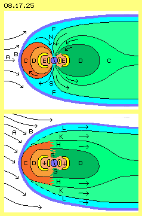
Weil in der gängigen Lehre unterstellt wird, der Erdmagnetismus würde analog zum Permanentmagnet oder zum stromführenden Leiter funktionieren, wird ´selbstverständlich´ von geschlossenen Magnetfeldlinien ausgegangen und damit zwangsweise ein Dipol unterstellt. Beides ist grundlegend falsch (und gerade in diesen Monaten wird erstmals über die Möglichkeit ´uni-polarer´ magnetischer Erscheinungen auch in anderem Zusammenhang diskutiert). Dieses Beispiel zeigt wieder einmal, wie durch vorgegebene Modellvorstellungen die Sicht eingeschränkt und die Erkenntnis der wahren Sachverhalte verhindert wird.
Basierend auf obigen Überlegungen ist in diesem Bild 08.17.25 unten dargestellt, wie das reale irdische Magnetfeld prinzipiell aufgebaut sein wird. Wie in Kapitel ´08.15 Normale und paranormale Erscheinungen´ beschrieben (und allgemein bekannt ist), weist die Strahlung der Sonne nicht radial nach außen, vielmehr fliegt der Sonnenwind in einer spiraligen ´Röhre´ zu den Planeten (und auch die Röhre selbst ist auf dieser langen Stecke wieder gewendelt). Die Erde ´zieht´ mit ihrer Rotation den Sonnenwind bereits drehend in ihren Bereich herein. Die Spirale hat etwa den Durchmesser der Erde, ihre Steigung ist sehr unterschiedlich: im (Nord-) Sommer fliegen die Partikel geradewegs zur Erde, mit dem galaktischen Wind. Im Winter kommen die Partikel gegen den galaktischen Wind langsamer voran, so dass die Spirale geringe Steigung aufweist.
Im Unterschied zu gängigen Darstellungen zeigen die Pfeile A unten im Bild diese generell diagonale ´Äther-Strömung´ aus Richtung Sonne an. Wenn der spiralige Sonnenwind in den Erde-Äther-Wirbel eintritt, wird er besonders im Übergangsbereich des Potential-Wirbels zum starren Wirbel ´eingebremst´. In diesem Staubereich richten sich die Partikel an den Magnetfeldlinien aus und daraus ergibt sich die massive Erscheinung der Magnetopause. Auch die Magnetopause (B, blau) kann damit keine symmetrischen ´Glocke´ bilden, sondern ist generell zur Nacht-Seite und nach Süden hin ´verblasen´.
Es ist wohl bekannt, dass die Stärke des Partikelstroms von der Sonne variiert. Auch der galaktische Wind ist nicht vollkommen konstant. Wenn solche ´Böen´ auf neutrale Magnetfeldlinien (in obiger Animation links) treffen, ergibt sich automatisch, dass die heftige Bewegung etwas später auf die jeweils ´unteren´ Ätherpunkte trifft. Daraus ergibt sich diese Nord-Süd-´Polarisierung´ der Magnetfeldlinien (wie in obiger Animation mittig aufgezeigt ist). An und direkt über der Erd-Oberfläche ergibt sich damit die derzeitige Ausrichtung des irdischen Magnetfeldes, von den arktischen bis zu den antarktischen Gebieten (hier markiert durch G).
Diese N-S-Polarisierung wird auch in den höheren Sphären existieren (hier markiert als Bereiche D). Nirgendwo wird es dort eine generelle S-N-Polarisierung geben im Sinne dieses äußeren Rückflusses geschlossener Magnetfeldlinien eines Dipols. Weiter außen (im Bereich C) und in der Magnetopause (B, hellblau) ist die Polarisierung differenziert: von einem Scheitelpunkt aus (etwa bei A) weist die Polarisierung abwärts und unter dem Südpol zur Nacht-Seite hin. Oberhalb dieses Scheitelpunktes weist die Polarisierung über dem Nordpol zur Nacht-Seite hin. Alle Magnetfeldlinien in diesen äußeren Bereichen werden von der Sonne weg gedrückt, d.h. es ergibt sich eine generelle ´Polarisierung´ von der Tag- zur Nacht-Seite der Erde (siehe Pfeile H, K und L), also im Gegensatz zu gängigen Vorstellungen.
Äther-Bewegungsmuster des Magnetismus
In obiger Animation wurde eine neutrale sowie eine abwärts und eine aufwärts gerichtete Magnetfeldlinie dargestellt. Sie unterscheiden sich nur durch ihr zeitlich versetztes Schwingen. Dieses Schwingen muss nicht immer gleichförmig sein (wie dort vereinfacht dargestellt ist). In aller Regel wird auch das ein Schwingen-mit-Schlag sein, z.B. ausgelöst durch die vorigen ´Böen´. Benachbarte und gleichartig schwingende Ätherpunkte bilden ganze Magnetfelder. Es können aber auch Felder unterschiedlichen Schwingens benachbart sein, in einem lokalen Bereich praktisch ein ´Sandwich´ bilden. Ein Wirbelzopf kann zeitweilig auch eingebettet sein in einen gegenläufigen, so dass keine klare Polarisierung mehr erkennbar ist. Der obige Scheitelpunkt wird z.B. keine fixe Position haben, sondern die Differenzierung ´oben-herüber oder unten-durch´ wird sich nach aktuellen ´Wind-Verhältnissen´ immer wieder ändern. Analoges gilt auch in den ausgedünnten Bereichen der Nacht-Seite.
Es ist also nicht verwunderlich, dass die Polarisierung des irdischen Magnetfeldes so schwierig zu erfassen ist. Auf der Tag- und Nacht-Seite sind die Bewegungen prinzipiell unterschiedlich, im Norden und Süden anderer Natur und darüber hinaus verändert sich dieses inhomogene Feld fortwährend. Im Web kann man z.B. ´live´ verfolgen, wie schnell und stark sich die Intensität und Richtung des Magnetfeldes im Norden Amerikas ändern. All dies ist nicht kompatibel zur Charakteristik von Permanentmagneten und auch nicht zu Induktions-Spulen. Diese gängigen Modelle sind irreführend, divergierende Ergebnisse sollten nicht als ´Messfehler´ außen vor bleiben. Der irdische Magnetismus ist nicht durch Vorgänge innerhalb der Erde bedingt, sondern stellt den zwangsweisen Ausgleich von Divergenzen in ihrem Äther-Umfeld dar. Eine zutreffende Interpretation der Verhältnisse ist darum nur möglich auf Basis dieses Verständnisses von Äther und seiner ´Whirlpools und Winde´ um das galaktische Zentrum, um die Sonne und um die Erde.
Fazit
Diese Ausführungen zum irdischen Magnetfeld kann ich nur als Behauptungen in den Raum stellen. Ich verfüge über keine Daten zur Beweisführung. Meine Hypothese dürfte dennoch zutreffender sein als die gängigen Vorstellungen - weil die bislang favorisierten Theorien voller Widersprüche sind, darum garantiert nicht zutreffen können und überhaupt keine Erklärung zu den oben diskutierten Phänomenen anbieten können.
Andererseits basiert der ultimative Beweis für die Existenz des Äthers und des hier beschriebenen Erde-Äther-Wirbels auf exakten Daten, welche den Fachleuten zuhauf vorliegen: das Verhalten geostationärer Satelliten. Hunderte ausgedienter Satelliten wurden auf ihren Friedhof-Orbits ´ruhig-gestellt´ - aber sie tanzen weiterhin auf ihren Achter-Bahnen - was nach gängigem Verständnis von Gravitation, Trägheit und ´leerem´ Raum schlicht und einfach nicht erklärbar ist. Auch der Licht-Äther wurde ´zu Grabe getragen´ vor hundert Jahren - aber er wird in diesem neuen Äther-Verständnis ´auferstehen´ müssen, damit physikalische Phänomene (aller Sparten) endlich eine zutreffende Erklärung finden.